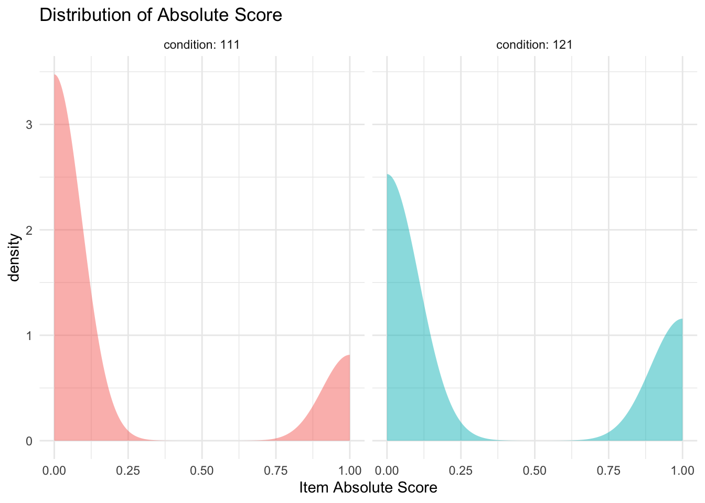
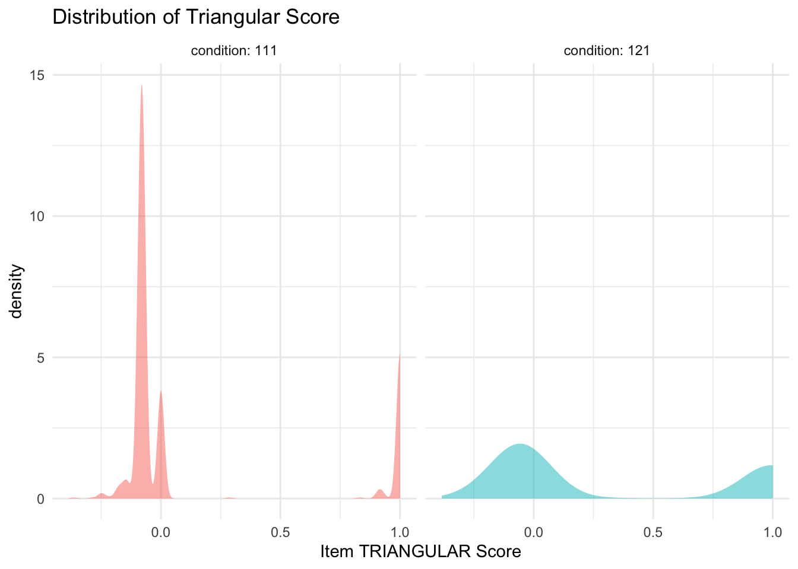
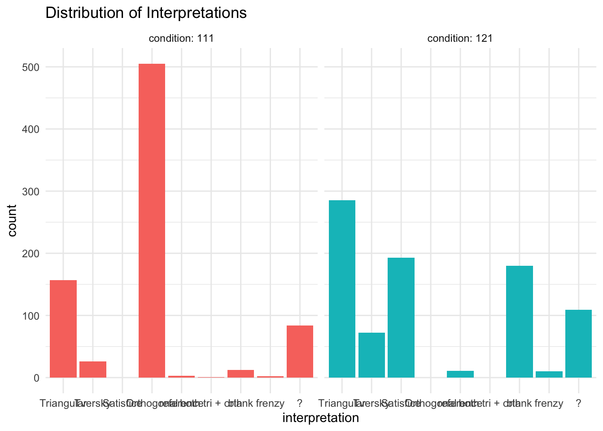
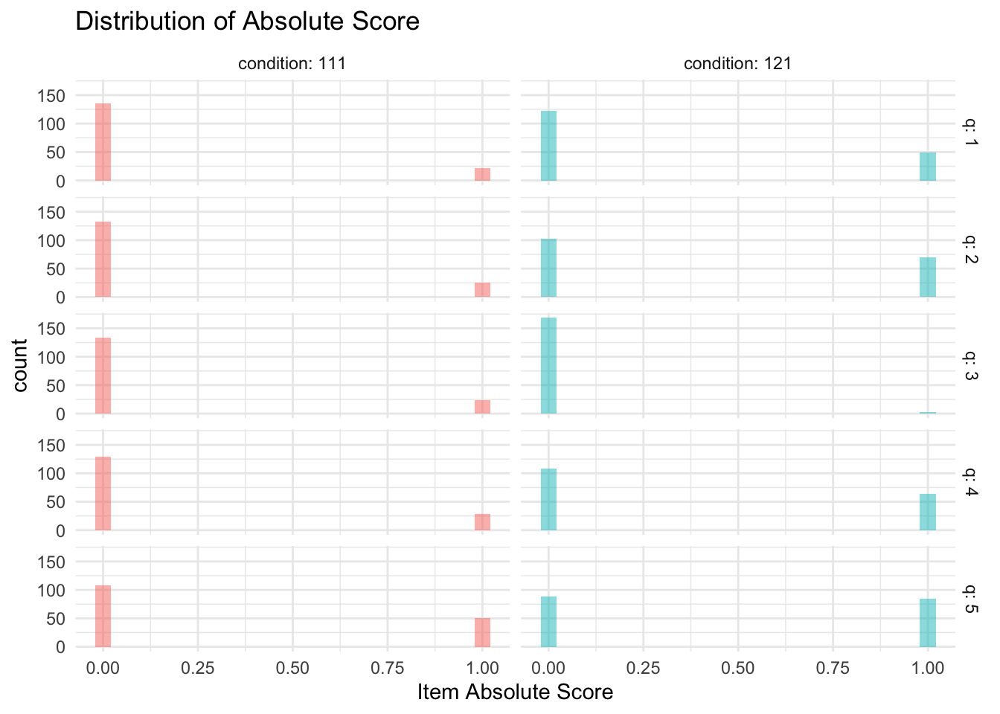
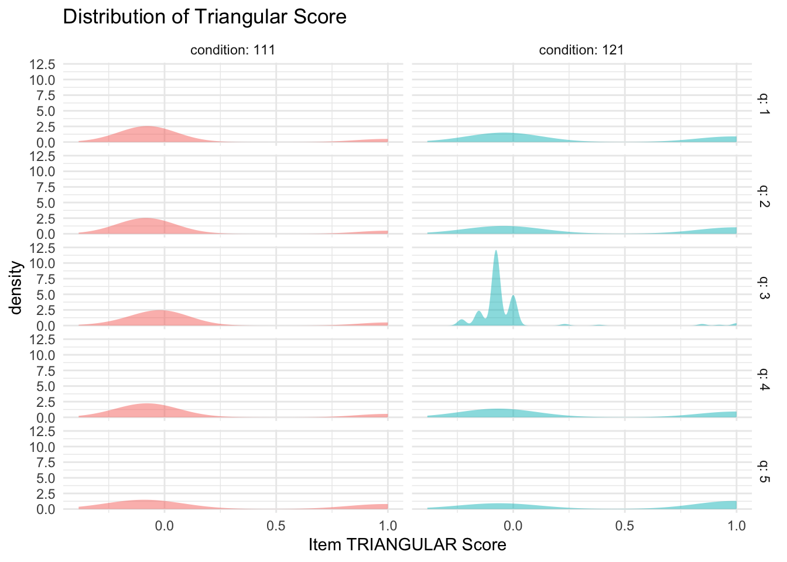
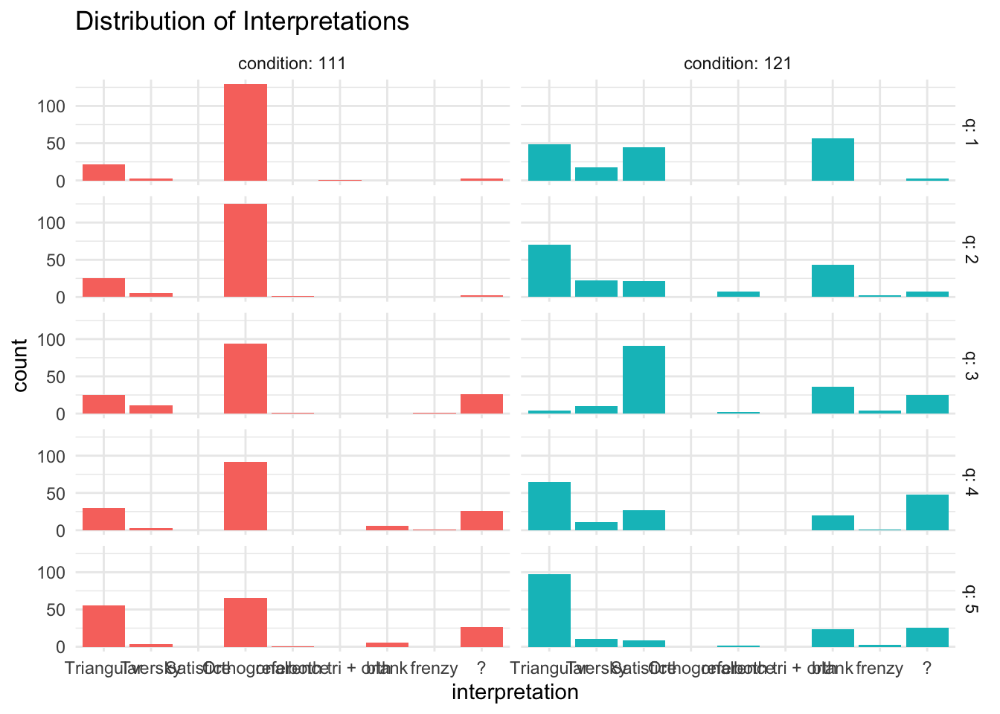
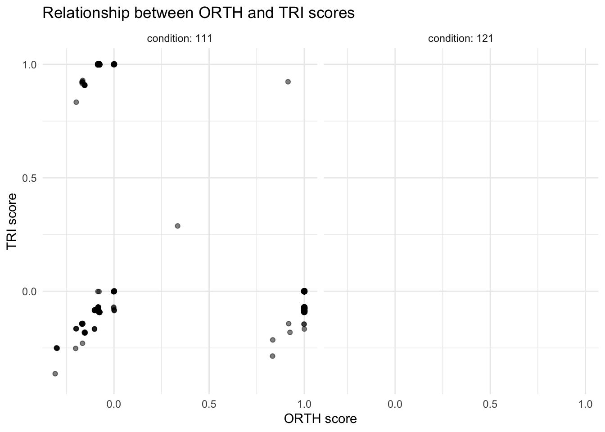
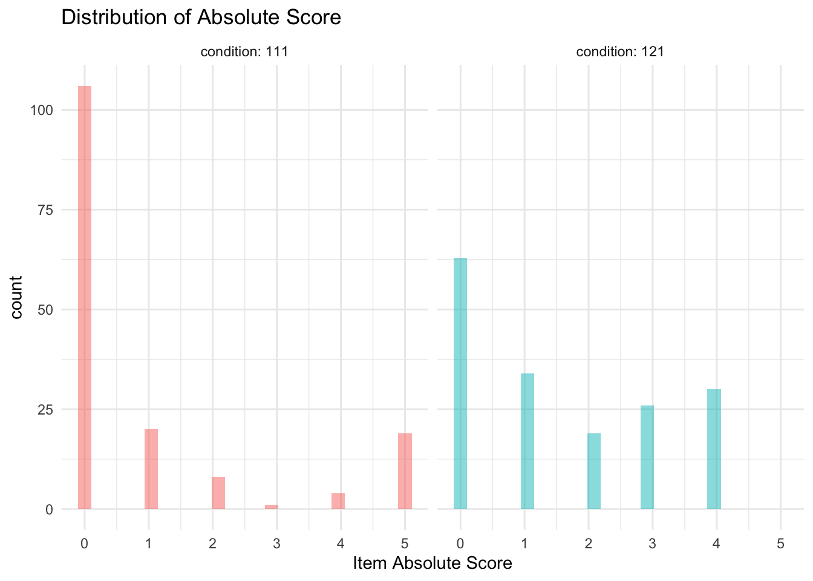
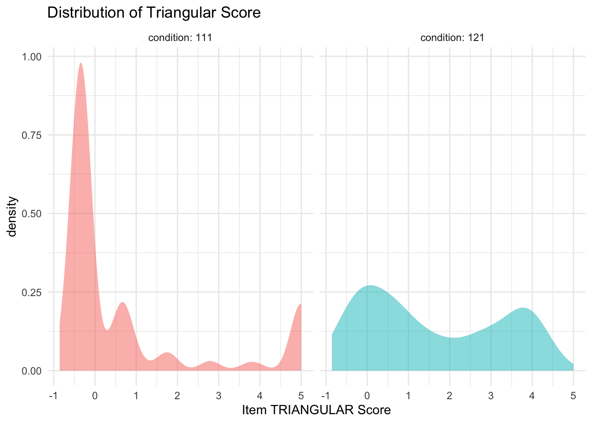
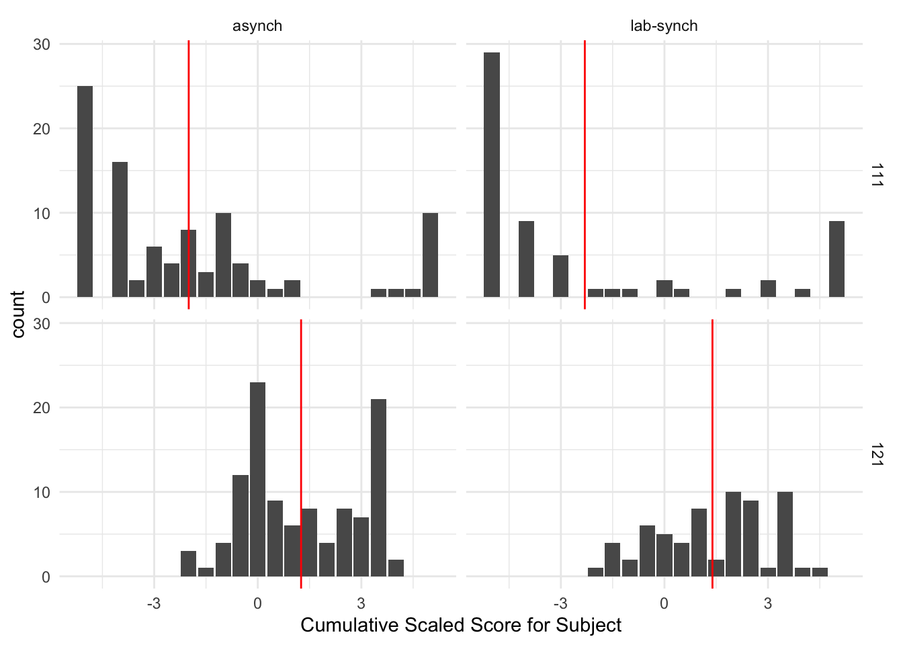

2 Response Scoring
Study SGC3A | 2 Response Scoring
TODO
- mine for inline TODOs
- finish item level response exploration
THIS NOTEBOOK IS INCOMPLETE
The purpose of this notebook is to score (assign a measure of accuracy) to response data for the SGC_3A study. This is required because the question type on the graph comprehension task used a ‘Multiple Response’ (MR) question design. Here, we evaluate different approaches to scoring multiple response questions, and transform raw item responses (e.g. boxes ABC are checked) to a measure of response accuracy. (Warning: this notebook takes several minutes to execute.)
| Pre-Requisite | Followed By |
|---|---|
| 1_sgc3A_harmonize.qmd | 3_sgc3A_exploration.qmd |
2.1 MULTIPLE RESPONSE SCORING
The graph comprehension task of study SGC 3A presents readers with a graph, a question, and a series of checkboxes. Participants are instructed to use the graph to answer the question, and respond by selecting all the checkboxes that apply, where each checkbox corresponds to a datapoint in the graph.

In the psychology and education literatures on Tests & Measures, the format of this type of question is referred to as Multiple Response (MR), (also: Multiple Choice Multiple Answer (MCMA) and Multiple Answer Multiple Choice (MAMC)). It has a number of properties that make it different from traditional Single Answer Multiple Choice (SAMC) questions, where the respondent marks a single response from a number of options. In particular, there are a number of very different ways that MAMC questions can be scored.
In tranditional SAMC format questions, one point is given for selecting the option designated as correct, and zero points given for marking any of the alternative (i.e. distractor) options. Individual response options on MAMC questions, however might be partially correct (\(i\)), while responses on other answer options within the same item might be incorrect (\(n – i\)). In MR, it is not obvious how to allocate points when the respondent marks a true-correct option (i.e. options that should be selected, denoted \(p\)), as well as one or more false-correct options (i.e. options that should not be selected, denoted \(q\)). Should partial credit be awarded? If so, are options that respondents false-selected and false-unselected items equally penalized?
Schmidt et al. (2021) performed a systematic literature review of publications proposing MAMC (or equivalent) scoring schemes, ultimately synthesizing over 80 sources into 27 distinct scoring approaches. Upon reviewing the benefits of trade-offs of each approach, for this study we choose utilize two of the schemes: dichotomous scoring ( Schmidt et al. (2021) scheme #1), and partial scoring \([-1/q,0, +1/p]\) ( Schmidt et al. (2021) scheme #26), as well as a scaled discriminant score that leverages partial scoring to discriminate between strategy-specific patterns of response.
2.1.1 Response Encoding
First, we note that the question type evaluated by Schmidt et al. (2021) is referred to as Multiple True-False (MTF), a variant of MAMC where respondents are presented with a question (stem) and series of response options with True/False (e.g. radio buttons) for each. Depending on the implementation of the underlying instrument, it may or may not be possible for respondents to not respond to a particular option (i.e. leave the item ‘blank’). Although MTF questions have a different underlying implementation (and potentially different psychometric properties) they are identical in their mathematical properties; that is, responses to a MAMC question of ‘select all that apply’ can be coded as a series of T/F responses to each response option

In this example (Figure 2.1), we see an example of a question with four response options (\(n=4\)) in each question type. In the SAMC approach (at left), there are four possible responses, given explicitly by the response options (respondent can select only one) \((\text{number of possible responses} = n)\). With only four possible responses, we cannot entirely discriminate between all combinations of the underlying response variants we might be interested in, and must always choose an ‘ideal subset’ of possible distractors to present as response options. In the MAMC (middle) and MTF (at right), the same number of response options (\(n=4\)) yield a much greater number \((\text{number of possible responses} = 2^{n})\). We can also see the equivalence between a MAMC and MTF format questions with the same response options. Options the respondent selects in MAMC are can be coded as T, and options they leave unselected can be coded as F. Thus, for response options (ABCD), a response of [AB] can also be encoded as [TTFF].
2.1.2 Scoring Schemes
In the sections that follow, we use the terminology:
Properties of the Stimulus-Question
\[\begin{align} n &= \text{number of response options} \\ &= p + q \\ p &= \text{number of true-select options (i.e. should be selected)} \\ q &= \text{number of true-unselect options (i.e. should not be selected)} \end{align}\]Properties of the Subject’s Response
\[\begin{align} i &= \text{number of options in correct state}, (0 ≤ i ≤ n) \\ f &= \text{resulting score} \end{align}\]2.1.2.1 Dichotomous Scoring
Dichotomous Scoring is the strictest scoring scheme, where a response only receives points if it is exactly correct, meaning the respondent includes only correct-select options, and does select any additional (i.e. incorrect-select) options that should not be selected. This is also known as all or nothing scoring, and importantly, it ignores any partial knowledge that a participant may be expressing through their choice of options. They may select some but not all of the correct-select options, and one or more but not all of the correct-unselect items, but receive the same score as a respondent selects none of the correct-select options, or all of the correct-unselect options. In this sense, dichotomous scoring tells us only about perfect knowledge, and ignores any indication of partial knowledge the respondent may be indicating through their selection of response options.
In Dichotomous Scoring
- score for the question is either 0 or 1
- full credit is only given if all responses are correct; otherwise no credit
- does not account for partial knowledge. - with increasing number of response options, scoring becomes stricter as each statement must be marked correctly.
The algorithm for dichotomous scoring is given by:
\[\begin{gather*} f = \begin{cases} 1, \text{if } i = n \\ 0, \text{otherwise} \end{cases} \end{gather*}\] 0 i n
2.1.2.2 Partial Scoring [-1/n, +1/n]
Partial Scoring refers to a class or scoring schemes that award the respondent partial credit depending on pattern of options they select. Schmidt et al. (2021) identify twenty-six different partial credit scoring schemes in the literature, varying in the range of possible scores, and the relative weighting of incorrectly selected (vs) incorrectly unselected options.
A particularly elegant approach to partial scoring is referred to as the \([-1/n, +1/n]\) approach ( Schmidt et al. (2021) #17). This approach is appealing in the context of SGC3A, because it: (1) takes into account all information provided by the respondent: the pattern of what the select, and choose not to select.
In Partial Scoring \([-1/n, +1/n]\):
- Scores range from [-1, +1]
- One point is awarded if all options are correct
- One point point is subtracted if all options are incorrect.
- Intermediate results are credited as fractions accordingly (\(+1/n\) for each correct, \(-1/n\) for each incorrect)
- This results in at chance performance (i.e. half of the given options marked correctly), being awarded 0 points are awarded
This scoring is more consistent with the motivating theory that Triangular Graph readers start out with an incorrect (i.e. orthogonal, cartesian) interpretation of the coordinate system, and transition to a correct (i.e. triangular) interpretation. But the first step in making this transition is realizing the cartesian interpretation is incorrect, which may yield blank responses where the respondent is essentially saying, ‘there is no correct answer to this question’.
Schmidt et al. (2021) describe the Partial \({[-1/n, +1/n]}\) scoring scheme as the only scoring method (of the 27 described) where respondents’ scoring results can be interpreted as a percentage of their true knowledge. One important drawback of this method is that a respondent may receive credit (a great deal of credit, depending on the number of answer options n) even if she did not select any options. In the case (such as ours) where there are many more response options \(n\) than there are options meant to be selected \(p\), this partial scoring algorithm poses a challenge because the respondent can achieve an almost completely perfect score by selecting a small number of options that should not be selected.
The algorithm for partial scoring\([-1/n, +1/n]\) is given by:
\[\begin{align} f &= (1/n * i) - (1/n * (n-i)) \\ &= (2i - n)/{n} \end{align}\]2.1.2.3 Partial Scoring [-1/q, +1/p]
One drawback of the Partial Scoring \([-1/n, +1/n]\) approach is that treats the choice to select, and choice to not select options as equally indicative of the respondent’s understanding. That is to say, incorrectly selecting one particular option is no more or less informative than incorrectly not-selecting a different item. This represents an important difference between MAMC (i.e. “select all correct options”) vs MTF (i.e. “Mark each option as true or false”) questions.
In our study, the selection of any particular option (remember options represent data points on the stimulus graph) is indicative of a particular interpretation of the stimulus. Incorrectly selecting an option indicates an interpretation of the graph with respect to that particular option. Alternatively, failing to select a correct option might mean the individual has a different interpretation, or that they failed to find all the data points consistent with the interpretation.
For this reason, we consider another alternative Partial Scoring scheme that takes into consideration only the selected statements, without penalizing statements incorrectly not selected. (See Schmidt et al. (2021) method #26; also referred to as the Morgan-Method) This partial scoring scheme takes into consideration that the most effort-free (or ‘default’) response for any given item is the null, or blank response. Blank responses indicate no understanding, perhaps confusion, or refusal to answer. These lack of responses are awarded zero credit. Whereas taking the action to select an incorrect option is effortful, and is indicative of incorrect understanding.
Partial Scoring \([-1/q, +1/p]\):
- awards +1/p for each correctly selected option (\(p_s\)), and subtracts \(1/(n-p) = 1/q\) for each incorrectly selected option (\(q_s\))
- only considers selected options; does not penalize nor reward unselected options
Properties of Item
\[\begin{align} p &= \text{number of true-select options (i.e. should be selected)} \\ q &= \text{number of true-unselect options (i.e. should not be selected)} \\ n &= \text{number of options} \: ( n = p + q) \end{align}\]Properties of Response
\[\begin{align} p_s &= \text{number of true-select options selected (i.e. number of correctly checked options)}\\ q_s &= \text{number of true-unselect options selected (i.e. number of incorrectly checked options } \end{align}\]The algorithm for partial scoring \([-1/q, +1/p]\) is given by:
\[\begin{align} f &= (p_s / p) - ({q_s}/{q}) \\ \end{align}\]CODE
f_partialP <- function(t,p,f,q) {
#t = number of correct-selected options
#p = number of true options
#f = number of incorrect-selected options
#q = number of false options
#n = number of options + p + q
ifelse( (p == 0), return(NA), "") #handle empty response set gracefully by returning nothing rather than 0
ifelse( (p != 0), return( (t / p) - (f/q)), "")
}2.1.3 Comparison of Schemes
Which scoring scheme is most appropriate for the goals of the graph comprehension task?
Consider the following example:
For a question with \(n = 5\) response options (data points A, B, C, D and E) with a correct response of A, the schemes under consideration yield the following scores:
CODE
title <- "Comparison of Scoring Schemes for n = 5 options [ A,B,C,D,E ]"
correct <- c( "A____",
"A____",
"A____",
"A____",
"A____",
"A____",
"A____",
"A____",
"A____" )
response <- c("A____",
"AB___",
"A___E",
"AB__E",
"____E",
"___DE",
"_BCDE",
"ABCDE",
"_____" )
i <- c( 5,
4,
4,
3,
3,
2,
0,
1,
4)
abs <- c(f_dichom(5,5),
f_dichom(4,5),
f_dichom(4,5),
f_dichom(3,5),
f_dichom(3,5),
f_dichom(2,5),
f_dichom(0,5),
f_dichom(1,5),
f_dichom(4,5))
partial1 <- c(f_partialN(5,5),
f_partialN(4,5),
f_partialN(4,5),
f_partialN(3,5),
f_partialN(3,5),
f_partialN(2,5),
f_partialN(0,5),
f_partialN(1,5),
f_partialN(4,5))
partial2 <- c(f_partialP(1,1,0,4),
f_partialP(1,1,1,4),
f_partialP(1,1,1,4),
f_partialP(1,1,2,4),
f_partialP(0,1,1,4),
f_partialP(0,1,2,4),
f_partialP(0,1,4,4),
f_partialP(1,1,4,4),
f_partialP(0,1,0,4))
names = c( "Correct Answer",
"Response",
"i ",
"Dichotomous",
"Partial [-1/n, +1/n]",
"Partial[-1/q, +1/p]")
dt <- data.frame(correct, response, i, abs, partial1 , partial2)
kbl(dt, col.names = names, caption = title, digits=3) %>%
kable_classic() %>%
add_header_above(c("Response Scenario " = 3, "Scores" = 3)) %>%
pack_rows("Perfect Response", 1, 1) %>%
pack_rows("Correct + Extra Incorrect Selections", 2, 4) %>%
pack_rows("Only Incorrect Selections", 5, 6) %>%
pack_rows("Completely Inverse Response ", 7, 7) %>%
pack_rows("Selected ALL or NONE", 8, 9) %>%
footnote(general = paste("i = number of options in correct state; _ indicates option not selected"),
general_title = "Note: ",footnote_as_chunk = T)Response Scenario |
Scores |
||||
|---|---|---|---|---|---|
| Correct Answer | Response | i | Dichotomous | Partial [-1/n, +1/n] | Partial[-1/q, +1/p] |
| Perfect Response | |||||
| A____ | A____ | 5 | 1 | 1.0 | 1.00 |
| Correct + Extra Incorrect Selections | |||||
| A____ | AB___ | 4 | 0 | 0.6 | 0.75 |
| A____ | A___E | 4 | 0 | 0.6 | 0.75 |
| A____ | AB__E | 3 | 0 | 0.2 | 0.50 |
| Only Incorrect Selections | |||||
| A____ | ____E | 3 | 0 | 0.2 | -0.25 |
| A____ | ___DE | 2 | 0 | -0.2 | -0.50 |
| Completely Inverse Response | |||||
| A____ | _BCDE | 0 | 0 | -1.0 | -1.00 |
| Selected ALL or NONE | |||||
| A____ | ABCDE | 1 | 0 | -0.6 | 0.00 |
| A____ | _____ | 4 | 0 | 0.6 | 0.00 |
| Note: i = number of options in correct state; _ indicates option not selected | |||||
CODE
#cleanup
rm(dt, abs, correct,i,names,partial1,partial2,response,title)We see that in the Dichotomous scheme, only the precisely correct response (row 1) yields a score other than zero. This scheme does now allow us to differentiate between different response patters.
The Partial \([-1/n, +1/n]\) scheme yields a range from \([-1,1]\), differentiating between responses. However, a blank response (bottom row) receives the same score (0.6) as the selection of the correct option + 1 incorrect option (row 2), which is problematic with for the goals of this study, where we need to differentiate between states of confusion or uncertainty yielding blank responses and the intentional selection of incorrect items.
The Partial \([-1/q, +1/p]\) scheme also yields a range of scores from \([-1,1]\). A blank response (bottom row) yields the same score (\(0\)) as the selection of all answer options (row 7); both are patterns of behavior we would expect to see if a respondent is confused or uncertain that there is a correct answer to the question.
Next we consider an example from our study, with \(n = 15\) options and \(p = 1\) correct option to be selected.
CODE
title <- "Comparison of Scoring Schemes for SGC3 with n=15 and p=1 options [A,B...N,O] "
correct <- c( "A____",
"A____",
"A____",
"A____",
"A____",
"A____",
"A____",
"A____",
"A____" )
response <- c("A__...__",
"AB_...__",
"A__..._O",
"AB_..._O",
"___..._O",
"___...NO",
"_BC...NO",
"ABC...NO",
"___...__" )
i <- c( 15,
14,
14,
13,
13,
12,
0,
1,
14)
abs <- c(f_dichom(15,15),
f_dichom(14,15),
f_dichom(14,15),
f_dichom(13,15),
f_dichom(13,15),
f_dichom(12,15),
f_dichom(0,15),
f_dichom(1,15),
f_dichom(14,15))
partial1 <- c(f_partialN(15,15),
f_partialN(14,15),
f_partialN(14,15),
f_partialN(13,15),
f_partialN(13,15),
f_partialN(12,15),
f_partialN(0,15),
f_partialN(1,15),
f_partialN(14,15))
partial2 <- c(f_partialP(1,1,0,14),
f_partialP(1,1,1,14),
f_partialP(1,1,1,14),
f_partialP(1,1,2,14),
f_partialP(0,1,1,14),
f_partialP(0,1,2,14),
f_partialP(0,1,14,14),
f_partialP(1,1,14,14),
f_partialP(0,1,0,14))
names = c( "Correct Answer",
"Response",
"$i$ ",
"Dichotomous",
"Partial [-1/n, +1/n]",
"Partial [-1/q, +1/p]")
dt <- data.frame(correct, response, i, abs, partial1 , partial2)
kbl(dt, col.names = names, caption = title, digits=3) %>%
kable_classic() %>%
add_header_above(c("Response Scenario " = 3, "Scores" = 3)) %>%
pack_rows("Perfect Response", 1, 1) %>%
pack_rows("Correct + Extra Incorrect Selections", 2, 4) %>%
pack_rows("Only Incorrect Selections", 5, 6) %>%
pack_rows("Completely Inverse Response ", 7, 7) %>%
pack_rows("Selected ALL or NONE", 8, 9) %>%
footnote(general = paste("i = number of options in correct state; _ indicates option not selected"),
general_title = "Note: ",footnote_as_chunk = T)Response Scenario |
Scores |
||||
|---|---|---|---|---|---|
| Correct Answer | Response | $i$ | Dichotomous | Partial [-1/n, +1/n] | Partial [-1/q, +1/p] |
| Perfect Response | |||||
| A____ | A__...__ | 15 | 1 | 1.000 | 1.000 |
| Correct + Extra Incorrect Selections | |||||
| A____ | AB_...__ | 14 | 0 | 0.867 | 0.929 |
| A____ | A__..._O | 14 | 0 | 0.867 | 0.929 |
| A____ | AB_..._O | 13 | 0 | 0.733 | 0.857 |
| Only Incorrect Selections | |||||
| A____ | ___..._O | 13 | 0 | 0.733 | -0.071 |
| A____ | ___...NO | 12 | 0 | 0.600 | -0.143 |
| Completely Inverse Response | |||||
| A____ | _BC...NO | 0 | 0 | -1.000 | -1.000 |
| Selected ALL or NONE | |||||
| A____ | ABC...NO | 1 | 0 | -0.867 | 0.000 |
| A____ | ___...__ | 14 | 0 | 0.867 | 0.000 |
| Note: i = number of options in correct state; _ indicates option not selected | |||||
CODE
#cleanup
rm(dt, abs, correct,i,names,partial1,partial2,response,title)Here again we see that the Partial \([-1/q, +1/p]\) scheme allows us differentiate between patterns of responses, in a way that is more sensible for the goals of the SGC3 graph comprehension task.
2.2 SCORE SGC DATA
In SGC_3A we are fundamentally interested in understanding how a participant interprets the presented graph (stimulus). The graph comprehension task asks them to select the data points in the graph that meet the criteria posed in the question. To assess a participant’s performance, for each question (q=15) we will calculate the following scores:
TODO UPDATE SCORE DEFS
An overall, strict score:
1. Absolute Score : using dichotomous scoring referencing true (Triangular) answer. (see 1.2)
Sub-scores, for each alternative graph interpretation
2. Triangular Score : using partial scoring [-1/q, +1/p] referencing true (Triangular) answer key.
3. Orthogonal Score : using partial scoring [-1/q, +1/p] referencing (incorrect Orthogonal) answer key.
4. Tversky Score : using partial scoring [-1/q, +1/p] referencing (incorrect connecting-lines strategy) answer key.
5. Satisficing Score : using partial scoring [-1/q, +1/p] referencing (incorrect satisficing stategy) answer key.
2.2.1 Prepare Answer Keys
We start by importing three answer keys: (1) Q1 - Q5 [control condition], (2) Q1-Q5 [impasse condition], (3) Q6-15. Separate answer keys by condition are required for Q1-Q5 because the stimuli for each condition visualize a different underlying dataset (i.e. the graphs show datapoints in different positions). Q6-Q15 are identical across conditions. Each answer key includes a row for each question, and a column defining the subset of response options that correspond to different graph interpretations.
CODE
key_111_raw <- read_csv('data/keys/SGC3A_scaffold_111_key.csv') %>% mutate(condition = 111, phase = "scaffold")
key_121_raw <- read_csv('data/keys/SGC3A_scaffold_121_key.csv')%>% mutate(condition = 121, phase = "scaffold")
key_test_raw <- read_csv('data/keys/SGC3A_test_key.csv')%>% mutate(condition = "", phase = "test")
#TODO decompose tversky responses for key_121_raw and key_test_raw
keys_raw <- rbind(key_111_raw, key_121_raw ) #, key_test_raw)
rm(key_111_raw, key_121_raw, key_test_raw)In order to calculate scores using the \([-1/q, +1/p]\) algorithm, we need to define the subset of all response options (set N) that should be selected (set P) and should not be selected (set Q). In order to calculate subscores for each graph interpretation (i.e. triangular, orthogonal, tversky) we must define these sets independently for each interpretation. For each question, the keys_raw dataframe gives us set N (all response options), and a set P (options that should be selected) for each interpretation. From these we must derive set Q for each interpretation.
SET \(N\), all response options (superset) . This set is the same across all interpretations (a property of the question) and is given in the answer key.
SET \(P\), \(P \subset N\) , the subset of options that should be selected (rewarded as +1/p) . This set differs by interpretation, and is given in the answer key.
SET \(A, A \subset N, A \sqcup P\) , the subset of options that should not be selected, but if they are, aren’t penalized (i.e. these options are ignored. Not rewarded, nor penalized). These include any options referenced in the question (i.e. select shifts that start at the same time as X; don’t penalize if they also select ‘X’), as well as options within 0.5hr offset from the data point to accommodate reasonable visual errors. This set differs by interpretation, and is given in the answer key (columns
REF_POINTand_also).SET \(Q\), the subset of options that should not be selected and are penalized (as -1/q). This set differs by interpretation and is not given in the answer key. We can derive set Q for each interpretation by \(Q = N - (P \cup A)\)
The next step in scoring is preparing interpretation-specific answer keys that specify sets N, P, A and Q for each question.
2.2.1.1 Triangular Key
First we construct a key set based on the ‘Triangular’ interpretation (i.e. the actually correct answers).
CODE
verify_tri = c() #sanity check
##——————————————————————————————————————————————————————————————————————
##CONSTRUCT TRIANGULAR KEY SET
##——————————————————————————————————————————————————————————————————————
#1. DEFINE SETS N, P, A
keys_tri <- keys_raw %>%
select(Q, condition, OPTIONS, TRIANGULAR, TRI_allow, REF_POINT) %>%
mutate(
#replace NAs
TRI_allow = str_replace_na(TRI_allow,""),
REF_POINT = str_replace_na(REF_POINT,""),
#P options that SHOULD be selected (rewarded)
set_p = TRIANGULAR,
set_p = str_replace_na(set_p,""),#replace na if empty
n_p = nchar(set_p), #number of true-select options
#A options that are ignored if selected
set_a = str_c(TRI_allow,REF_POINT, sep=""),
n_a = nchar(set_a),
#N store all answr options (superset)
set_n = OPTIONS,
n_n = nchar(set_n)
) %>% select(Q, condition, set_n, set_p, set_a, n_n, n_p, n_a)
#2. DEFINE SETS N, P, A
for (x in 1:nrow(keys_tri)) {
#UNWIND STRINGS FOR SETDIFF
#n all answer options
N = keys_tri[x,'set_n'] %>% pull(set_n) %>% strsplit("") %>% unlist()
#p correct-select answer options
P = keys_tri[x,'set_p'] %>% pull(set_p) %>% strsplit("") %>% unlist()
#a ignore-select answer options (should not be selected, but if they are, don't penalize)
A = keys_tri[x,'set_a'] %>% pull(set_a) %>% strsplit("") %>% unlist()
#Q = N - (P+A)
#answers that are penalized (at -1/q) if selected
s = union(P,A) #rewarded plus ignored
s = str_replace_na(s,"")
# s = union(s,X) # + trapdoor
Q = setdiff(N,s) # = penalized at -1/q when selected
#save set to dataframe
Q = str_c(Q, collapse="")
n_q = nchar(Q)
keys_tri[x,'set_q'] = Q
keys_tri[x,'n_q'] = n_q
#verify each element in N is included in one and only one of P,A,Q
tempunion = union(s,Q) %>% str_c(collapse="") %>% strsplit("") %>% unlist()
N = N %>% str_c(collapse="") %>% strsplit("") %>% unlist()
verify_tri[x] = setequal(tempunion,N)
}
#3. reorder cols for ease of use
keys_tri <- keys_tri %>% select(Q, condition, set_n, set_p, set_a, set_q, n_n, n_p, n_a, n_q) %>% mutate(verify = n_p + n_a + n_q)
#cleanup
rm(N,A,P,Q,n_q,s,x,tempunion)This leaves us a dataframe keys_tri that define the sets of response options consistent with the triangular graph interpretation.
To verify we have generated the correct sets, we verify that for each question, each option in N is included in either set P, A or Q (once and only once).
TRUE, TRUE, TRUE, TRUE, TRUE, TRUE, TRUE, TRUE, TRUE, TRUE
2.2.1.2 Orthogonal Key
Next we construct a key set based on the ‘Orthogonal’ interpretation.
CODE
verify_orth = c() #sanity check
##——————————————————————————————————————————————————————————————————————
##CONSTRUCT ORTHOGONAL KEY SET
##——————————————————————————————————————————————————————————————————————
#1. DEFINE SETS N, P, A
keys_orth <- keys_raw %>%
select(Q, condition, OPTIONS, ORTHOGONAL, ORTH_allow, REF_POINT) %>%
mutate(
#replace NAs
ORTH_allow = str_replace_na(ORTH_allow,""),
REF_POINT = str_replace_na(REF_POINT,""),
#P options that SHOULD be selected (rewarded)
set_p = ORTHOGONAL,
set_p = str_replace_na(set_p,""),#replace na if empty
n_p = nchar(set_p), #number of true-select options
#A options that are ignored if selected
set_a = str_c(ORTH_allow,REF_POINT, sep=""),
set_a = str_replace_na(set_a,""), #replace na if empty
n_a = nchar(set_a),
#N store all answer options (superset)
set_n = OPTIONS,
n_n = nchar(set_n)
) %>% select(Q, condition, set_n, set_p, set_a, n_n, n_p, n_a)
#2. DO THE STUFF THAT'S EASIER IN A LOOP
for (x in 1:nrow(keys_orth)) {
#UNWIND STRINGS FOR SETDIFF
#n all answer options
N = keys_orth[x,'set_n'] %>% pull(set_n) %>% strsplit("") %>% unlist()
#p correct-select answer options
P = keys_orth[x,'set_p'] %>% pull(set_p) %>% strsplit("") %>% unlist()
#a ignore-select answer options (should not be selected, but if they are, don't penalize)
A = keys_orth[x,'set_a'] %>% pull(set_a) %>% strsplit("") %>% unlist()
#Q = N - (P+A)
#answers that are penalized (at -1/q) if selected
s = union(P,A) #rewarded plus ignored
s = str_replace_na(s,"")
# print(s)
# s = union(s,X) # + trapdoor
Q = setdiff(N,s) # = penalized at -1/q when selected
#save set to dataframe
Q = str_c(Q, collapse="")
n_q = nchar(Q)
keys_orth[x,'set_q'] = Q
keys_orth[x,'n_q'] = n_q
#verify each element in N is included in one and only one of P,A,Q
tempunion = union(s,Q) %>% str_c(collapse="") %>% strsplit("") %>% unlist()
# print(tempunion)
N = N %>% str_c(collapse="") %>% strsplit("") %>% unlist()
verify_orth[x] = setequal(tempunion,N)
}
#3. reorder cols for ease of use
keys_orth <- keys_orth %>% select(Q, condition, set_n, set_p, set_a, set_q, n_n, n_p, n_a, n_q) %>% mutate(verify = n_p + n_a + n_q)
#cleanup
rm(A, N, n_q, P, Q, s, tempunion, x)This leaves us a dataframe keys_orth that define the sets of response options consistent with the orthogonal graph interpretation.
To verify we have generated the correct sets, we verify that for each question, each response in N is included in either set P, A or Q (once and only once).
TRUE, TRUE, TRUE, TRUE, TRUE, TRUE, TRUE, TRUE, TRUE, TRUE
2.2.1.3 Satisficing Key
Next we construct two keys based on the ‘Satisficing’ strategy. Satisficing involves selecting any data points within 0.5hr visual offset of the orthogonal interpretation of the graph (because no orthogonal response option is available). One key represents selecting a point slightly to the left of the orthogonal, and the other key represents selecting a point slightly to the right of the orthogonal.
CODE
verify_satisfice_right = c() #sanity check
##——————————————————————————————————————————————————————————————————————
##CONSTRUCT SATISFICE RIGHT KEY SET
##——————————————————————————————————————————————————————————————————————
#1. DEFINE SETS N, P, A
keys_satisfice_right <- keys_raw %>%
select(Q, condition, OPTIONS, SATISFICE_right, REF_POINT) %>%
mutate(
#replace NAs
REF_POINT = str_replace_na(REF_POINT,""),
#P options that SHOULD be selected (rewarded)
set_p = SATISFICE_right,
set_p = str_replace_na(set_p,""), #replace na if empty
n_p = nchar(set_p), #number of true-select options
#A options that are ignored if selected
set_a = str_c(REF_POINT, sep=""),
set_a = str_replace_na(set_a,""), #replace na if empty
n_a = nchar(set_a),
#N store all answr options (superset)
set_n = OPTIONS,
n_n = nchar(set_n)
) %>% select(Q, condition, set_n, set_p, set_a, n_n, n_p, n_a)
#2. DO THE STUFF THAT'S EASIER IN A LOOP
for (x in 1:nrow(keys_satisfice_right)) {
#UNWIND STRINGS FOR SETDIFF
#n all answer options
N = keys_satisfice_right[x,'set_n'] %>% pull(set_n) %>% strsplit("") %>% unlist()
#p correct-select answer options
P = keys_satisfice_right[x,'set_p'] %>% pull(set_p) %>% strsplit("") %>% unlist()
#a ignore-select answer options (should not be selected, but if they are, don't penalize)
A = keys_satisfice_right[x,'set_a'] %>% pull(set_a) %>% strsplit("") %>% unlist()
#Q = N - (P+A)
#answers that are penalized (at -1/q) if selected
s = union(P,A) #rewarded plus ignored
s = str_replace_na(s,"")
# print(s)
# s = union(s,X) # + trapdoor
Q = setdiff(N,s) # = penalized at -1/q when selected
#save set to data frame
Q = str_c(Q, collapse="")
n_q = nchar(Q)
keys_satisfice_right[x,'set_q'] = Q
keys_satisfice_right[x,'n_q'] = n_q
#verify each element in N is included in one and only one of P,A,Q
tempunion = union(s,Q) %>% str_c(collapse="") %>% strsplit("") %>% unlist()
N = N %>% str_c(collapse="") %>% strsplit("") %>% unlist()
verify_satisfice_right[x] = setequal(tempunion,N)
}
#3. reorder cols for ease of use
keys_satisfice_right <- keys_satisfice_right %>% select(Q, condition, set_n, set_p, set_a, set_q, n_n, n_p, n_a, n_q)%>% mutate(verify = n_p + n_a + n_q)
#cleanup
rm(A, N, n_q, P, Q, s, tempunion, x)
verify_satisfice_left = c() #sanity check
##——————————————————————————————————————————————————————————————————————
##CONSTRUCT SATISFICE left KEY SET
##——————————————————————————————————————————————————————————————————————
#1. DEFINE SETS N, P, A
keys_satisfice_left <- keys_raw %>%
select(Q, condition, OPTIONS, SATISFICE_left, REF_POINT) %>%
mutate(
#replace NAs
REF_POINT = str_replace_na(REF_POINT,""),
#P options that SHOULD be selected (rewarded)
set_p = SATISFICE_left,
set_p = str_replace_na(set_p,""), #replace na if empty
n_p = nchar(set_p), #number of true-select options
#A options that are ignored if selected
set_a = str_c(REF_POINT, sep=""),
set_a = str_replace_na(set_a,""), #replace na if empty
n_a = nchar(set_a),
#N store all answr options (superset)
set_n = OPTIONS,
n_n = nchar(set_n)
) %>% select(Q, condition, set_n, set_p, set_a, n_n, n_p, n_a)
#2. DO THE STUFF THAT'S EASIER IN A LOOP
for (x in 1:nrow(keys_satisfice_left)) {
#UNWIND STRINGS FOR SETDIFF
#n all answer options
N = keys_satisfice_left[x,'set_n'] %>% pull(set_n) %>% strsplit("") %>% unlist()
#p correct-select answer options
P = keys_satisfice_left[x,'set_p'] %>% pull(set_p) %>% strsplit("") %>% unlist()
#a ignore-select answer options (should not be selected, but if they are, don't penalize)
A = keys_satisfice_left[x,'set_a'] %>% pull(set_a) %>% strsplit("") %>% unlist()
#Q = N - (P+A)
#answers that are penalized (at -1/q) if selected
s = union(P,A) #rewarded plus ignored
s = str_replace_na(s,"")
# print(s)
# s = union(s,X) # + trapdoor
Q = setdiff(N,s) # = penalized at -1/q when selected
#save set to data frame
Q = str_c(Q, collapse="")
n_q = nchar(Q)
keys_satisfice_left[x,'set_q'] = Q
keys_satisfice_left[x,'n_q'] = n_q
#verify each element in N is included in one and only one of P,A,Q
tempunion = union(s,Q) %>% str_c(collapse="") %>% strsplit("") %>% unlist()
N = N %>% str_c(collapse="") %>% strsplit("") %>% unlist()
verify_satisfice_left[x] = setequal(tempunion,N)
}
#3. reorder cols for ease of use
keys_satisfice_left <- keys_satisfice_left %>% select(Q, condition, set_n, set_p, set_a, set_q, n_n, n_p, n_a, n_q)%>% mutate(verify = n_p + n_a + n_q)
#cleanup
rm(A, N, n_q, P, Q, s, tempunion, x)This leaves us a dataframe keys_satisfice that define the sets of response options consistent with the orthogonal graph interpretation.
To verify we have generated the correct sets, we verify that for each question, each response in N is included in either set P, A or Q (once and only once).
TRUE, TRUE, TRUE, TRUE, TRUE, TRUE, TRUE, TRUE, TRUE, TRUE TRUE, TRUE, TRUE, TRUE, TRUE, TRUE, TRUE, TRUE, TRUE, TRUE
2.2.1.4 Tversky Keys
Next we construct the key set based on a partial-understanding strategy we refer to as ‘Tversky’. We use the label Tversky as shorthand for a partial interpretation of the coordinate system where subjects select a set of responses that lay along a connecting line from the referenced data point or referenced time for that item. The term is named for Barbara Tversky based on her work on graphical primitives (e.g. “lines connect, arrows direct, boxes contain”).
CODE
verify_max = c() #sanity check
##——————————————————————————————————————————————————————————————————————
##CONSTRUCT TVERSKY KEY SET for TVERSKY-MAX
##——————————————————————————————————————————————————————————————————————
#1. DEFINE SETS N, P, A
keys_tversky_max <- keys_raw %>%
select(Q, condition, OPTIONS, REF_POINT, TV_max, TV_max_allow) %>%
mutate(
#replace NAs
REF_POINT = str_replace_na(REF_POINT,""),
TV_max = str_replace_na(TV_max,""),
TV_max_allow = str_replace_na(TV_max_allow,""),
#P options that SHOULD be selected (rewarded)
set_p = TV_max,
set_p = str_replace_na(set_p,""), #replace na if empty
n_p = nchar(set_p), #number of true-select options
#A options that are ignored if selected
set_a = str_c(TV_max_allow,REF_POINT, sep=""),
set_a = str_replace_na(set_a,""), #replace na if empty
n_a = nchar(set_a),
#N store all answr options (superset)
set_n = OPTIONS,
n_n = nchar(set_n)
) %>% select(Q, condition, set_n, set_p, set_a, n_n, n_p, n_a)
#2. DO THE STUFF THAT'S EASIER IN A LOOP
for (x in 1:nrow(keys_tversky_max)) {
#UNWIND STRINGS FOR SETDIFF
#n all answer options
N = keys_tversky_max[x,'set_n'] %>% pull(set_n) %>% strsplit("") %>% unlist()
#p correct-select answer options
P = keys_tversky_max[x,'set_p'] %>% pull(set_p) %>% strsplit("") %>% unlist()
#a ignore-select answer options (should not be selected, but if they are, don't penalize)
A = keys_tversky_max[x,'set_a'] %>% pull(set_a) %>% strsplit("") %>% unlist()
#Q = N - (P+A)
#answers that are penalized (at -1/q) if selected
s = union(P,A) #rewarded plus ignored
s = str_replace_na(s,"")
# s = union(s,X) # + trapdoor
Q = setdiff(N,s) # = penalized at -1/q when selected
#save set to dataframe
Q = str_c(Q, collapse="")
n_q = nchar(Q)
keys_tversky_max[x,'set_q'] = Q
keys_tversky_max[x,'n_q'] = n_q
#verify each element in N is included in one and only one of P,A,Q
tempunion = union(s,Q) %>% str_c(collapse="") %>% strsplit("") %>% unlist()
N = N %>% str_c(collapse="") %>% strsplit("") %>% unlist()
verify_max[x] = setequal(tempunion,N)
}
#3. reorder cols for ease of use
keys_tversky_max <- keys_tversky_max %>% select(Q, condition, set_n, set_p, set_a, set_q, n_n, n_p, n_a, n_q) %>% mutate(verify = n_p + n_a + n_q)
verify_tversky_start = c() #sanity check
##——————————————————————————————————————————————————————————————————————
##CONSTRUCT TVERSKY KEY SET for TVERSKY-START
##——————————————————————————————————————————————————————————————————————
#1. DEFINE SETS N, P, A
keys_tversky_start <- keys_raw %>%
select(Q, condition, OPTIONS, REF_POINT, TV_start, TV_start_allow) %>%
mutate(
#replace NAs
REF_POINT = str_replace_na(REF_POINT,""),
TV_start = str_replace_na(TV_start,""),
TV_start_allow = str_replace_na(TV_start_allow,""),
#P options that SHOULD be selected (rewarded)
set_p = TV_start,
set_p = str_replace_na(set_p,""), #replace na if empty
n_p = nchar(set_p), #number of true-select options
#A options that are ignored if selected
set_a = str_c(TV_start_allow,REF_POINT, sep=""),
set_a = str_replace_na(set_a,""), #replace na if empty
n_a = nchar(set_a),
#N store all answr options (superset)
set_n = OPTIONS,
n_n = nchar(set_n)
) %>% select(Q, condition, set_n, set_p, set_a, n_n, n_p, n_a)
#2. DO THE STUFF THAT'S EASIER IN A LOOP
for (x in 1:nrow(keys_tversky_start)) {
#UNWIND STRINGS FOR SETDIFF
#n all answer options
N = keys_tversky_start[x,'set_n'] %>% pull(set_n) %>% strsplit("") %>% unlist()
#p correct-select answer options
P = keys_tversky_start[x,'set_p'] %>% pull(set_p) %>% strsplit("") %>% unlist()
#a ignore-select answer options (should not be selected, but if they are, don't penalize)
A = keys_tversky_start[x,'set_a'] %>% pull(set_a) %>% strsplit("") %>% unlist()
#Q = N - (P+A)
#answers that are penalized (at -1/q) if selected
s = union(P,A) #rewarded plus ignored
s = str_replace_na(s,"")
# s = union(s,X) # + trapdoor
Q = setdiff(N,s) # = penalized at -1/q when selected
#save set to dataframe
Q = str_c(Q, collapse="")
n_q = nchar(Q)
keys_tversky_start[x,'set_q'] = Q
keys_tversky_start[x,'n_q'] = n_q
#verify each element in N is included in one and only one of P,A,Q
tempunion = union(s,Q) %>% str_c(collapse="") %>% strsplit("") %>% unlist()
N = N %>% str_c(collapse="") %>% strsplit("") %>% unlist()
verify_tversky_start[x] = setequal(tempunion,N)
}
#3. reorder cols for ease of use
keys_tversky_start <- keys_tversky_start %>% select(Q, condition, set_n, set_p, set_a, set_q, n_n, n_p, n_a, n_q) %>% mutate(verify = n_p + n_a + n_q)
verify_tversky_end = c() #sanity check
##——————————————————————————————————————————————————————————————————————
##CONSTRUCT TVERSKY KEY SET for TVERSKY-END
##——————————————————————————————————————————————————————————————————————
#1. DEFINE SETS N, P, A
keys_tversky_end <- keys_raw %>%
select(Q, condition, OPTIONS, REF_POINT, TV_end, TV_end_allow) %>%
mutate(
#replace NAs
REF_POINT = str_replace_na(REF_POINT,""),
TV_end = str_replace_na(TV_end,""),
TV_end_allow = str_replace_na(TV_end_allow,""),
#P options that SHOULD be selected (rewarded)
set_p = TV_end,
set_p = str_replace_na(set_p,""), #replace na if empty
n_p = nchar(set_p), #number of true-select options
#A options that are ignored if selected
set_a = str_c(TV_end_allow,REF_POINT, sep=""),
set_a = str_replace_na(set_a,""), #replace na if empty
n_a = nchar(set_a),
#N store all answr options (superset)
set_n = OPTIONS,
n_n = nchar(set_n)
) %>% select(Q, condition, set_n, set_p, set_a, n_n, n_p, n_a)
#2. DO THE STUFF THAT'S EASIER IN A LOOP
for (x in 1:nrow(keys_tversky_end)) {
#UNWIND STRINGS FOR SETDIFF
#n all answer options
N = keys_tversky_end[x,'set_n'] %>% pull(set_n) %>% strsplit("") %>% unlist()
#p correct-select answer options
P = keys_tversky_end[x,'set_p'] %>% pull(set_p) %>% strsplit("") %>% unlist()
#a ignore-select answer options (should not be selected, but if they are, don't penalize)
A = keys_tversky_end[x,'set_a'] %>% pull(set_a) %>% strsplit("") %>% unlist()
#Q = N - (P+A)
#answers that are penalized (at -1/q) if selected
s = union(P,A) #rewarded plus ignored
s = str_replace_na(s,"")
# s = union(s,X) # + trapdoor
Q = setdiff(N,s) # = penalized at -1/q when selected
#save set to dataframe
Q = str_c(Q, collapse="")
n_q = nchar(Q)
keys_tversky_end[x,'set_q'] = Q
keys_tversky_end[x,'n_q'] = n_q
#verify each element in N is included in one and only one of P,A,Q
tempunion = union(s,Q) %>% str_c(collapse="") %>% strsplit("") %>% unlist()
N = N %>% str_c(collapse="") %>% strsplit("") %>% unlist()
verify_tversky_end[x] = setequal(tempunion,N)
}
#3. reorder cols for ease of use
keys_tversky_end <- keys_tversky_end %>% select(Q, condition, set_n, set_p, set_a, set_q, n_n, n_p, n_a, n_q) %>% mutate(verify = n_p + n_a + n_q)
verify_tversky_duration = c()
##——————————————————————————————————————————————————————————————————————
##CONSTRUCT TVERSKY KEY SET for TVERSKY-DURATION
##——————————————————————————————————————————————————————————————————————
#1. DEFINE SETS N, P, A
keys_tversky_duration <- keys_raw %>%
select(Q, condition, OPTIONS, REF_POINT, TV_dur, TV_dur_allow) %>%
mutate(
#replace NAs
REF_POINT = str_replace_na(REF_POINT,""),
TV_dur = str_replace_na(TV_dur,""),
TV_dur_allow = str_replace_na(TV_dur_allow,""),
#P options that SHOULD be selected (rewarded)
set_p = TV_dur,
set_p = str_replace_na(set_p,""), #replace na if empty
n_p = nchar(set_p), #number of true-select options
#A options that are ignored if selected
set_a = str_c(TV_dur_allow,REF_POINT, sep=""),
set_a = str_replace_na(set_a,""), #replace na if empty
n_a = nchar(set_a),
#N store all answr options (superset)
set_n = OPTIONS,
n_n = nchar(set_n)
) %>% select(Q, condition, set_n, set_p, set_a, n_n, n_p, n_a)
#2. DO THE STUFF THAT'S EASIER IN A LOOP
for (x in 1:nrow(keys_tversky_duration)) {
#UNWIND STRINGS FOR SETDIFF
#n all answer options
N = keys_tversky_duration[x,'set_n'] %>% pull(set_n) %>% strsplit("") %>% unlist()
#p correct-select answer options
P = keys_tversky_duration[x,'set_p'] %>% pull(set_p) %>% strsplit("") %>% unlist()
#a ignore-select answer options (should not be selected, but if they are, don't penalize)
A = keys_tversky_duration[x,'set_a'] %>% pull(set_a) %>% strsplit("") %>% unlist()
#Q = N - (P+A)
#answers that are penalized (at -1/q) if selected
s = union(P,A) #rewarded plus ignored
s = str_replace_na(s,"")
# s = union(s,X) # + trapdoor
Q = setdiff(N,s) # = penalized at -1/q when selected
#save set to dataframe
Q = str_c(Q, collapse="")
n_q = nchar(Q)
keys_tversky_duration[x,'set_q'] = Q
keys_tversky_duration[x,'n_q'] = n_q
#verify each element in N is included in one and only one of P,A,Q
tempunion = union(s,Q) %>% str_c(collapse="") %>% strsplit("") %>% unlist()
N = N %>% str_c(collapse="") %>% strsplit("") %>% unlist()
verify_tversky_duration[x] = setequal(tempunion,N)
}
#3. reorder cols for ease of use
keys_tversky_duration <- keys_tversky_duration %>% select(Q, condition, set_n, set_p, set_a, set_q, n_n, n_p, n_a, n_q) %>% mutate(verify = n_p + n_a + n_q)
#cleanup
rm(A, N, n_q, P, Q, s, tempunion, x)This leaves us four dataframes, each corresponding to a different variant of a ‘lines connecting to reference point’ strategy.
- keys_tversky_max : the superset of lines connecting options - keys_tversky_start : lines connecting to the rightward diagonal (start time) of the reference point - keys_tversky_end: lines connecting to the leftward diagonal (end time) of the reference point - keys_tversky_duration: lines connecting to the horizontal y-intercept (duration) of the reference point
To verify we have generated the correct sets, we verify that for each question, each response in N is included in either set P, A or Q (once and only once).
TRUE, TRUE, TRUE, TRUE, TRUE, TRUE, TRUE, TRUE, TRUE, TRUE
TRUE, TRUE, TRUE, TRUE, TRUE, TRUE, TRUE, TRUE, TRUE, TRUE
TRUE, TRUE, TRUE, TRUE, TRUE, TRUE, TRUE, TRUE, TRUE, TRUE
TRUE, TRUE, TRUE, TRUE, TRUE, TRUE, TRUE, TRUE, TRUE, TRUE
CODE
#cleanup
rm(verify_tri, verify_orth, verify_satisfice, verify_max, verify_tversky_duration, verify_tversky_end, verify_tversky_start)Warning in rm(verify_tri, verify_orth, verify_satisfice, verify_max,
verify_tversky_duration, : object 'verify_satisfice' not found2.2.2 Score Items
Next, we import the item-level response data. For each row in the item level dataset (indicating the response to a single question-item for a single subject), we compare the raw response df_items$response with the answer keys in each interpretation (e.g. keys_orth, keys_tri, etc…), then using those sets, determine the number of correctly selected items(p) and incorrectly selected items (q), which in turn are used to calculate partial[-1/q, +1/p] scores for each interpretation. The resulting scores are then stored on each item in df_items, and can be used to determine which graph interpretation the subject held.
Specifically, the following scores are calculated for each item:
-
score_TRIHow consistent is the response with the triangularinterpretation? -
score_ORTHHow consistent is the response with the orthogonalinterpretation? -
score_TV_maxHow consistent is the response with the (maximal) Tverskyinterpretation? -
score_SAT_leftHow consistent is the response with the (left) Satisficinginterpretation? -
score_SAT_rightHow consistent is the response with the (right) Satisficinginterpretation? -
score_TV_startHow consistent is the response with the (start-time) Tverskyinterpretation? -
score_TV_endHow consistent is the response with the (end-time) Tverskyinterpretation? -
score_TV_durationHow consistent is the response with the (duration) Tverskyinterpretation? -
score_REFDid the response select only the reference point? -
score_BOTHHow consistent is the response with both the orthogonal and triangular interpretations? -
score_ABSIs the response strictly correct? (triangular interpretation) -
score_niceABSIs the response strictly correct? (triangular interpretation, not penalizing ref points)
CODE
calc_sub_score2 <- function(question, cond, response, keyframe){
# print(paste(question, cond, response))
#STEP 1 GET KEY
if (question < 6) #for q1 - q5 find key for question by condition
{
# print(keyframe)
#GET KEY FOR THIS SCORE TYPE, QUESTION AND CONDITION
p = keyframe %>% filter(Q == question) %>% filter(condition == cond) %>% select(set_p) %>% pull(set_p) %>% str_split("") %>% unlist()
q = keyframe %>% filter(Q == question) %>% filter(condition == cond) %>% select(set_q) %>% pull(set_q) %>% str_split("") %>% unlist()
pn = keyframe %>% filter(Q == question) %>% filter(condition == cond) %>% select(n_p)
qn = keyframe %>% filter(Q == question) %>% filter(condition == cond) %>% select(n_q)
# print(p)
# print(q)
# print(paste("pn ",pn))
# print(paste("qn ",qn))
} else {
#GET KEY FOR THIS SCORE TYPE, QUESTION
p = keyframe %>% filter(Q == question) %>% select(set_p) %>% pull(set_p) %>% str_split("") %>% unlist()
q = keyframe %>% filter(Q == question) %>% select(set_q) %>% pull(set_q) %>% str_split("") %>% unlist()
pn = keyframe %>% filter(Q == question) %>% select(n_p)
qn = keyframe %>% filter(Q == question) %>% select(n_q)
}
#STEP 2 CALC INTERSECTIONS BETWEEN RESPONSE AND KEY
#if response is not empty, split apart response for set comparison
if(response != "")
{ response = response %>% str_split("") %>% unlist()}
#set comparisons
ps = length(intersect(response,p))
# print(paste("correct selected" ,ps))
qs = length(intersect(response,q))
# print(paste("incorrect selected", qs))
# df_items[x,'tri_ps'] = tri_ps
# df_items[x,'tri_qs'] = tri_qs
#STEP 3 CALC f_partialP schema SCORE FOR THIS INTERSECTION
x = f_partialP(ps,pn,qs,qn) %>% unlist() %>% as.numeric()
# print(x)
#cleanup
rm(p,q,pn,qn,ps,qs)
return(x)
}
#CALCULATE THE REFERENCE SCORES
calc_ref_score2 <- function(question, cond, response){
#1. GET reference point from REF_POINT column in raw keys
ref_p = keys_raw %>% filter(Q == question) %>% filter(condition == cond) %>% select(REF_POINT) %>% pull(REF_POINT) %>% str_split("") %>% unlist()
#2. if response has more than one character, it can't be correct
#there is only ever 1 reference character
n = nchar(response)
if (n == 0) {x = 0}
else if(n>1) {x = 0}
else {
#3 is the response PRECISELY the REFERENCE POINT?
x = ref_p == response
x = as.numeric(x)
}
#cleanup
rm(ref_p, response, question, cond)
return(x) #1 = match, 0 = not match
}
#CALCULATE SCORE BASED ON UNION OF ORTH & TRI (SUBJECT SELECTS BOTH ANSWERS )
calc_both_score2 <- function(question, cond, response){
#TRAPDOOR
#since no orth responses exist for impasse condition q1 - q5, set to 0
if (question < 6 & cond == 121) {x = NA}
#ELSE
#calculate union of ORTH and TRI
else {
if (question < 6 & cond == 111) #for q1 - q5 find key for question by condition
{
#grab the tri and orth keys for this question as well as N option set
tri_p = keys_tri %>% filter(Q == question) %>% filter(condition == cond) %>% select(set_p) %>% pull(set_p) %>% str_split("") %>% unlist()
orth_p = keys_orth %>% filter(Q == question) %>% filter(condition == cond) %>% select(set_p) %>% pull(set_p) %>% str_split("") %>% unlist()
set_n = keys_tri %>% filter(Q == question) %>% filter(condition == cond) %>% select(set_n) %>% pull(set_n) %>% str_split("") %>% unlist()
#1. calc answer that is both tri and orth and only these --> union of tri_p and orth_p
both_p = union(tri_p, orth_p) #the selection of tri and p
#2. calc answers that should't be selected as diffrence between N [same for all keys] and both_p
both_q = setdiff(set_n,both_p)
both_pn = length(both_p)
both_qn = length(both_q)
} else{
#grab the tri and orth keys for this question as well as N option set
tri_p = keys_tri %>% filter(Q == question) %>% select(set_p) %>% pull(set_p) %>% str_split("") %>% unlist()
orth_p = keys_orth %>% filter(Q == question) %>% select(set_p) %>% pull(set_p) %>% str_split("") %>% unlist()
set_n = keys_tri %>% filter(Q == question) %>% select(set_n) %>% pull(set_n) %>% str_split("") %>% unlist()
#1. calc answer that is both tri and orth and only these --> union of tri_p and orth_p
both_p = union(tri_p, orth_p) #the selection of tri and p
#2. calc answers that shouldn't be selected as difference between N [same for all keys] and both_p
both_q = setdiff(set_n,both_p)
both_pn = length(both_p)
both_qn = length(both_q)
}
#STEP 2 CALC INTERSECTIONS BETWEEN RESPONSE AND KEY
#if response is not empty, split apart response for set comparison
if(response != "")
{ response = response %>% str_split("") %>% unlist()}
both_ps = length(intersect(response,both_p))
both_qs = length(intersect(response,both_q))
#STEP 3 CALC f_partialP schema SCORE FOR THIS INTERSECTION
x = f_partialP(both_ps,both_pn,both_qs,both_qn)%>% unlist() %>% as.numeric()
#cleanup
rm(both_p,both_q,both_pn,both_qn,both_ps,both_qs, question, cond, response )
}
return(x) #true correct, trues, false correct, falses
}
#REORDER THE CHARACTERS IN A STRING
reorder_inplace <- function(x)
{
y = x %>% str_split("") %>% unlist() %>% sort() %>% str_c(collapse="")
return (y)
}note: this cell takes several minutes to run and is not optimized
CODE
#RUN THIS OR THE CALCULATE-SCORES-FORLOOP
# df_items = alt
df_items = backup %>% filter(q<6)
#ALPHEBETIZE RESPONSE
df_items$response = pbmapply(reorder_inplace, df_items$response)
# #STRATEGY SUBSCORES
df_items$score_TRI = pbmapply(calc_sub_score2, df_items$q, df_items$condition, df_items$response, MoreArgs = list(keyframe = keys_tri))
df_items$score_ORTH = pbmapply(calc_sub_score2, df_items$q, df_items$condition, df_items$response, MoreArgs = list(keyframe = keys_orth))
df_items$score_SAT_left = pbmapply(calc_sub_score2, df_items$q, df_items$condition, df_items$response, MoreArgs = list(keyframe = keys_satisfice_left))
df_items$score_SAT_right = pbmapply(calc_sub_score2, df_items$q, df_items$condition, df_items$response, MoreArgs = list(keyframe = keys_satisfice_right))
df_items$score_TV_max = pbmapply(calc_sub_score2, df_items$q, df_items$condition, df_items$response, MoreArgs = list(keyframe = keys_tversky_max))
df_items$score_TV_start = pbmapply(calc_sub_score2, df_items$q, df_items$condition, df_items$response, MoreArgs = list(keyframe = keys_tversky_start))
df_items$score_TV_end = pbmapply(calc_sub_score2, df_items$q, df_items$condition, df_items$response, MoreArgs = list(keyframe = keys_tversky_end))
df_items$score_TV_duration = pbmapply(calc_sub_score2, df_items$q, df_items$condition, df_items$response, MoreArgs = list(keyframe = keys_tversky_duration))
#TODO SPECIAL SUBSCORES
df_items$score_REF = pbmapply(calc_ref_score2, df_items$q, df_items$condition, df_items$response)
df_items$score_BOTH = pbmapply(calc_both_score2, df_items$q, df_items$condition, df_items$response)
#ABSOLUTE SCORES
df_items$score_ABS = as.integer(df_items$correct)
df_items$score_niceABS <- as.integer((df_items$score_TRI == 1))
# alt_scored = df_items2.2.3 Derive Interpretation
Finally, we compare the interpretation subscores and decide which is highest. This indicates the interpretation that the individual’s response most closely approximates. This algorithm makes assigns one of the following values to each item response:
Orthogonal
Triangular
Tversky
both Tri + Orth
reference
blank
frenzy
? TODO ADJUST ‘both’ to select for both tri/satisfice or both tri/orth? See Q1 121 ‘CO’
CODE
threshold_range = 0.5 #set required variance in subscores to be discriminant
threshold_frenzy = 4
# df_items <- backup
for (x in 1:nrow(df_items)) {
#CALCULATE MAX TVERSKY SUBSCORE
t = df_items[x,] %>% select(score_TV_max, score_TV_start, score_TV_end, score_TV_duration) #reshape
t.long = gather(t,score, value, 1:4)
t.long[t.long == ""] = NA #replace empty scores with NA so we can ignore them
if(length(unique(t.long$value)) == 1 ){
if(is.na(unique(t.long$value))){
df_items[x,'score_TVERSKY'] = NA
df_items[x,'tv_type'] = NA
}
} else {
df_items[x,'score_TVERSKY'] = as.numeric(max(t.long$value,na.rm = TRUE))
df_items[x,'tv_type'] = t.long[which.max(t.long$value),'score']
}
#CALCULATE MAX SATISFICING SUBSCORE
t = df_items[x,] %>% select(score_SAT_left, score_SAT_right)
t.long = gather(t,score, value, 1:2)
t.long[t.long == ""] = NA #replace empty scores
if(length(unique(t.long$value)) == 1 ){
if(is.na(unique(t.long$value))){
df_items[x,'score_SATISFICE'] = NA
df_items[x,'sat_type'] = NA
}
} else {
df_items[x,'score_SATISFICE'] = as.numeric(max(t.long$value,na.rm = TRUE))
df_items[x,'sat_type'] = t.long[which.max(t.long$value),'score']
}
#NOW CALCULATE RANGE AMONG SUBSCORES
#order of this selection matters in breaking ties!
t = df_items[x,] %>% select(score_TRI, score_TVERSKY, score_SATISFICE, score_ORTH)
t.long = gather(t,score, value, 1:4)
t.long[t.long == ""] = NA
df_items[x,'top_score'] = as.numeric(max(t.long$value,na.rm = TRUE))
df_items[x,'top_type'] = t.long[which.max(t.long$value),'score']
#calculate the range between highest and lowest scores
r = as.numeric(range(t.long$value,na.rm = TRUE))
r = diff(r)
df_items[x,'range'] = r
#DISCRIMINANT BETWEEN SUBSCORES TO PREDICT BEST FIT INTERPRETATION
if (r < threshold_range) {
#then we can't predict the interpretation, leave it as "?"
df_items[x,'best'] = "?"
} else {
p = df_items[x,'top_type']
if (p == "score_TRI") {df_items[x,'best'] = "Triangular"
} else if(p == "score_ORTH") {df_items[x,'best'] = "Orthogonal"
} else if(p == "score_TVERSKY") {df_items[x,'best'] = "Tversky"
} else if(p == "score_SATISFICE") {df_items[x,'best'] = "Satisfice"}
}
#CHECK SPECIAL SITUATIONS
#BOTH TRI AND ORTH?
if (!is.na(df_items[x,'score_BOTH'])) { #only check if both is not null
if( df_items[x,'score_BOTH'] == 1) {
df_items[x,'best'] = "both tri + orth"}
}
#IS BLANK?
if( df_items[x,'num_o'] == 0) {
df_items[x,'best'] = "blank"
}
#IS FRENZY?
if( df_items[x,'num_o'] > threshold_frenzy) {
df_items[x,'best'] = "frenzy"
}
#IS REF POINT?
if (!is.na(df_items[x,'score_REF'])) { #only check if the score is NOT null
if( df_items[x,'score_REF'] == 1) {
df_items[x,'best'] = "reference"
}
}
}#end loop
#cleanup
rm(t, t.long, x, r,p)
rm(threshold_frenzy, threshold_range)
#set order of levels
df_items$interpretation <- factor(df_items$best,
levels = c("Triangular", "Tversky",
"Satisfice", "Orthogonal", "reference", "both tri + orth", "blank","frenzy","?"))
#recode as numeric inase they are char
# df_items$score_TV_duration <- df_items$score_TV_duration %>% as.numeric()
# df_items$score_SATISFICE <- df_items$score_SATISFICE %>% as.numeric()2.2.4 Derive Discriminant Score
Triangular = +1 Tversky = +0.5 anything else = 0 Satisfice = -0.5 Orthogonal = -1
TODO should ‘both’ be coded as 0 or 1 or 0.5?
CODE
df_items$score_SCALED <- recode(df_items$interpretation,
"Orthogonal" = -1,
"Triangular" = 1,
"Tversky" = 0.5,
"Satisfice" = -0.5,
"reference" = 0,
"both tri + orth" = 0,
"blank" = 0,
"frenzy" = 0,
"?" = 0)2.3 EXPLORE RESPONSES
In this section we explore responses given by participants to each particular item in the graph comprehension task, indicate how each response was scored, and what interpretation of the graph is indicated by different responses.
2.3.1 Scaffold Phase
The first five questions constitute the ‘scaffold’ (or learning) phase, where participants see a different version of the stimulus (specifically a different dataset is visualized) invoking a different experimental condition.
2.3.1.1 Question #1
2.3.1.1.1 Q1. Control Condition
We start by exploring the range of response options checked by participants on Question 1, for those assigned to the control (non-impasse) condition (condition = 111).

CODE
q <- keys_raw %>% filter(condition == 111) %>% filter(Q==1)
ignore <- q %>% select("REF_POINT")
answers <- q %>% select("TRIANGULAR", "ORTHOGONAL", "SATISFICE_left", "SATISFICE_right","TV_max","TV_start", "TV_end", "TV_dur") %>% unlist()
ves <- q %>% mutate(
SATISFICE_left_allow = "",
SATISFICE_right_allow = ""
) %>% select("TRI_allow", "ORTH_allow", "SATISFICE_left_allow","SATISFICE_right_allow", "TV_max_allow","TV_start_allow","TV_end_allow", "TV_dur_allow")%>% unlist()
options <- q %>% select("OPTIONS")
question = q %>% select("TEXT")
scores <- c("Triangular", "Orthgonal", "Satisficing [left]", "Satisficing [right]", "Tversky [maximal]", "Tversky [start diagonal]",
"Tversky [end diagonal]", "Tversky [duration line]")
d = tibble(interpretation = scores, answer = answers, allowed=ves)
d$answer <- replace_na(d$answer, "")
d$allowed <- replace_na(d$allowed, "")
title = paste("Answer Key | Q1 Control Condition : ", question)
cols = c("interpretation", "answer","not penalized")
d %>% kbl(caption = title, col.names = cols) %>% kable_classic() %>%
footnote(general = paste("15 response options: ", options), general_title = "Note: ",footnote_as_chunk = T) | interpretation | answer | not penalized |
|---|---|---|
| Triangular | F | Z |
| Orthgonal | A | OI |
| Satisficing [left] | ||
| Satisficing [right] | ||
| Tversky [maximal] | CF | Z |
| Tversky [start diagonal] | F | Z |
| Tversky [end diagonal] | C | |
| Tversky [duration line] | ||
| Note: 15 response options: AIKGXJDBCHUZOFE |
Notice that for this Question, the Triangular answer is the same as the Tversky [start diagonal] answer. In fact, for most questions, one of the Tversky sub-types will match the correct response.
Here we summarize the distinct response options given by participants on this item. Each letter in response indicates a checkbox selected by the participant (See Figure 2.2 ). n indicates the number of participants who gave this response, while interpretation indicates the graph interpretation most consistent with that response. At the right of this table are the Absolute, followed by Partial Credit subscores for each response. NA indicates that there is no score calculated (occurs when there is no subset of response options that accord with that interpretation for this question).
CODE
title <- "Frequency of Selected Response Options for Question #1 (Control Condition)"
names = c("response","n","interpretation","absolute","tri","tversky","satisfice","orthogonal")
df_items %>% filter(q == 1 & condition == 111) %>% group_by(response) %>%
dplyr::summarise( count = n(),
nice = unique(score_niceABS),
triangular = unique(score_TRI),
orthogonal = unique(score_ORTH),
satisficing = unique(score_SATISFICE),
tversky = unique(score_TVERSKY),
interpretation = unique(interpretation)) %>%
arrange(interpretation, desc(count)) %>%
select(response, count, interpretation, nice,
triangular, tversky, satisficing, orthogonal) %>%
kbl(caption = title, col.names = names) %>% kable_classic() %>%
add_header_above(c(" " = 3, "Strict Score" = 1, "Interpretation Scores"=4)) %>%
pack_rows("Triangular", 1, 1) %>%
pack_rows("Lines-Connect", 2, 2) %>%
pack_rows("Orthogonal", 3, 3) %>%
pack_rows("other", 4, 7) %>%
footnote(general = "n = number of responses in sample",
general_title = "Note: ",footnote_as_chunk = T) Strict Score |
Interpretation Scores |
||||||
|---|---|---|---|---|---|---|---|
| response | n | interpretation | absolute | tri | tversky | satisfice | orthogonal |
| Triangular | |||||||
| F | 22 | Triangular | 1 | 1.000 | 1.000 | NA | -0.083 |
| Lines-Connect | |||||||
| CF | 3 | Tversky | 0 | 0.923 | 1.000 | NA | -0.167 |
| Orthogonal | |||||||
| A | 129 | Orthogonal | 0 | -0.077 | -0.071 | NA | 1.000 |
| other | |||||||
| AF | 1 | both tri + orth | 0 | 0.923 | 0.923 | NA | 0.917 |
| DIJ | 1 | ? | 0 | -0.231 | -0.214 | NA | -0.167 |
| X | 1 | ? | 0 | -0.077 | -0.071 | NA | -0.083 |
| Z | 1 | ? | 0 | 0.000 | 0.000 | NA | -0.083 |
| Note: n = number of responses in sample | |||||||
We see that nearly all of the subjects selected a response consistent with one of the identified interpretations. Responses that do not accord with any interpretation are indicated as ? .
| Which shifts start at 11am? | |
|---|---|
 |
Response: A
|
 |
Response: F
|
 |
Response: C, F
|
 |
Response: A , F
|
Three responses were given that were not consistent with any of the identified interpretations. Note that options highlighted in light grey are considered within the range of ‘visual error’, defined by 0.5hr offset from the interpretation-specific projection.
| I J D | X |
Z TODO find this person, did they subsequently give tri answers? |
|---|---|---|
 |
 |
 |
2.3.1.1.2 Q1. Impasse Condition
Next we explore the range of response options checked by participants on Question 1, for those assigned to the control (non-impasse) condition (condition = 111).

CODE
q <- keys_raw %>% filter(condition == 121) %>% filter(Q==1)
ignore <- q %>% select("REF_POINT")
answers <- q %>% select("TRIANGULAR", "ORTHOGONAL", "SATISFICE_left", "SATISFICE_right","TV_max","TV_start", "TV_end", "TV_dur") %>% unlist()
ves <- q %>% mutate(
SATISFICE_left_allow = "",
SATISFICE_right_allow = ""
) %>% select("TRI_allow", "ORTH_allow", "SATISFICE_left_allow","SATISFICE_right_allow", "TV_max_allow","TV_start_allow","TV_end_allow", "TV_dur_allow")%>% unlist()
options <- q %>% select("OPTIONS")
question = q %>% select("TEXT")
scores <- c("Triangular", "Orthgonal", "Satisficing [left]", "Satisficing [right]", "Tversky [maximal]", "Tversky [start diagonal]",
"Tversky [end diagonal]", "Tversky [duration line]")
d = tibble(interpretation = scores, answer = answers, allowed=ves)
d$answer <- replace_na(d$answer, "")
d$allowed <- replace_na(d$allowed, "")
title = paste("Answer Key | Q1 Impasse Condition : ", question)
cols = c("interpretation", "answer","not penalized")
d %>% kbl(caption = title, col.names = cols) %>% kable_classic() %>%
footnote(general = paste("15 response options: ", options), general_title = "Note: ",footnote_as_chunk = T) | interpretation | answer | not penalized |
|---|---|---|
| Triangular | F | |
| Orthgonal | ||
| Satisficing [left] | O | |
| Satisficing [right] | AI | |
| Tversky [maximal] | CF | |
| Tversky [start diagonal] | F | |
| Tversky [end diagonal] | C | |
| Tversky [duration line] | ||
| Note: 15 response options: AIKGXJDBCHUZOFE |
Notice that there is no orthogonal answer for this question. This is the purpose of the impasse condition, to remove the possibility of selecting the orthogonal answer, we expect learners will be more likely to restructure their understanding of the coordinate system, and arrive at a correct (triangular) interpretation.
CODE
title <- "Frequency of Selected Response Options for Question #1 (Impasse Condition)"
names = c("response","n","interpretation","absolute","tri","tversky","satisfice","orthogonal")
df_items %>% filter(q == 1 & condition == 121) %>% group_by(response) %>%
dplyr::summarise( count = n(),
nice = unique(score_niceABS),
triangular = unique(score_TRI),
orthogonal = unique(score_ORTH),
satisficing = unique(score_SATISFICE),
tversky = unique(score_TVERSKY),
interpretation = unique(interpretation)) %>%
arrange(interpretation, desc(count)) %>%
select(response, count, interpretation, nice,
triangular, tversky, satisficing, orthogonal) %>%
kbl(caption = title, col.names = names) %>% kable_classic() %>%
add_header_above(c(" " = 3, "Strict Score" = 1, "Interpretation Scores"=4)) %>%
pack_rows("Triangular", 1, 1) %>%
pack_rows("Lines-Connect", 2, 4) %>%
pack_rows("Satisfice", 5, 9) %>%
pack_rows("Other", 10, 12) %>%
footnote(general = "n = number of responses in sample",
general_title = "Note: ",footnote_as_chunk = T) Strict Score |
Interpretation Scores |
||||||
|---|---|---|---|---|---|---|---|
| response | n | interpretation | absolute | tri | tversky | satisfice | orthogonal |
| Triangular | |||||||
| F | 49 | Triangular | 1 | 1.000 | 1.000 | -0.071 | NA |
| Lines-Connect | |||||||
| CF | 14 | Tversky | 0 | 0.929 | 1.000 | -0.143 | NA |
| C | 3 | Tversky | 0 | -0.071 | 1.000 | -0.071 | NA |
| CO | 1 | Tversky | 0 | -0.143 | 0.929 | 0.929 | NA |
| Satisfice | |||||||
| O | 28 | Satisfice | 0 | -0.071 | -0.071 | 1.000 | NA |
| AI | 9 | Satisfice | 0 | -0.143 | -0.143 | 1.000 | NA |
| A | 4 | Satisfice | 0 | -0.071 | -0.071 | 0.500 | NA |
| AO | 2 | Satisfice | 0 | -0.143 | -0.143 | 0.929 | NA |
| I | 2 | Satisfice | 0 | -0.071 | -0.071 | 0.500 | NA |
| Other | |||||||
| 57 | blank | 0 | 0.000 | 0.000 | NA | NA | |
| E | 2 | ? | 0 | -0.071 | -0.071 | -0.071 | NA |
| X | 1 | ? | 0 | -0.071 | -0.071 | -0.071 | NA |
| Note: n = number of responses in sample | |||||||
We see that nearly all of the subjects selected a response consistent with one of the identified interpretations. Responses that do not accord with any interpretation are indicated as ? .
TODO ADJUST ‘both’ to select for both tri/satisfice or both tri/orth
| Which shifts start at 11am? | |
|---|---|
 |
Response: F
|
|
Response: [C, F]
|
 |
Responses: [AOI]
|
Two responses were given that were not consistent with any of the identified interpretations.
| [E],[X] |
|---|
 |
2.3.1.2 Question #2

2.3.1.2.1 Q2. Control Condition
CODE
q <- keys_raw %>% filter(condition == 111) %>% filter(Q==2)
ignore <- q %>% select("REF_POINT")
answers <- q %>% select("TRIANGULAR", "ORTHOGONAL", "SATISFICE_left", "SATISFICE_right","TV_max","TV_start", "TV_end", "TV_dur") %>% unlist()
ves <- q %>% mutate(
SATISFICE_left_allow = "",
SATISFICE_right_allow = ""
) %>% select("TRI_allow", "ORTH_allow", "SATISFICE_left_allow","SATISFICE_right_allow", "TV_max_allow","TV_start_allow","TV_end_allow", "TV_dur_allow")%>% unlist()
options <- q %>% select("OPTIONS")
question = q %>% select("TEXT")
scores <- c("Triangular", "Orthgonal", "Satisficing [left]", "Satisficing [right]", "Tversky [maximal]", "Tversky [start diagonal]",
"Tversky [end diagonal]", "Tversky [duration line]")
d = tibble(interpretation = scores, answer = answers, allowed=ves)
d$answer <- replace_na(d$answer, "")
d$allowed <- replace_na(d$allowed, "")
title = paste("Answer Key | Q2 Control Condition : ", question)
cols = c("interpretation", "answer","not penalized")
d %>% kbl(caption = title, col.names = cols) %>% kable_classic() %>%
footnote(general = paste("15 response options: ", options), general_title = "Note: ",footnote_as_chunk = T) | interpretation | answer | not penalized |
|---|---|---|
| Triangular | K | Z |
| Orthgonal | E | G |
| Satisficing [left] | ||
| Satisficing [right] | ||
| Tversky [maximal] | AKJX | Z |
| Tversky [start diagonal] | AK | Z |
| Tversky [end diagonal] | X | |
| Tversky [duration line] | J | |
| Note: 15 response options: AIKGXJDBCHUZOFE |
CODE
title <- "Frequency of Selected Response Options for Question #2 (Control Condition)"
names = c("response","n","interpretation","absolute","tri","tversky","satisfice","orthogonal")
df_items %>% filter(q == 2 & condition == 111) %>% group_by(response) %>%
dplyr::summarise( count = n(),
nice = unique(score_niceABS),
triangular = unique(score_TRI),
orthogonal = unique(score_ORTH),
satisficing = unique(score_SATISFICE),
tversky = unique(score_TVERSKY),
interpretation = unique(interpretation)) %>%
arrange(interpretation, desc(count)) %>%
select(response, count, interpretation, nice,
triangular, tversky, satisficing, orthogonal) %>%
kbl(caption = title, col.names = names) %>% kable_classic() %>%
add_header_above(c(" " = 3, "Strict Score" = 1, "Interpretation Scores"=4)) %>%
pack_rows("Triangular", 1, 2) %>%
pack_rows("Lines-Connect", 3, 4) %>%
pack_rows("Orthogonal", 5, 7) %>%
pack_rows("Other", 8, 10) %>%
footnote(general = "n = number of responses in sample",
general_title = "Note: ",footnote_as_chunk = T) Strict Score |
Interpretation Scores |
||||||
|---|---|---|---|---|---|---|---|
| response | n | interpretation | absolute | tri | tversky | satisfice | orthogonal |
| Triangular | |||||||
| K | 24 | Triangular | 1 | 1.000 | 0.500 | NA | -0.083 |
| DK | 1 | Triangular | 1 | 1.000 | 0.500 | NA | -0.083 |
| Lines-Connect | |||||||
| J | 4 | Tversky | 0 | -0.083 | 1.000 | NA | -0.083 |
| AK | 1 | Tversky | 0 | 0.917 | 1.000 | NA | -0.167 |
| Orthogonal | |||||||
| E | 121 | Orthogonal | 0 | -0.083 | -0.077 | NA | 1.000 |
| DE | 3 | Orthogonal | 0 | -0.083 | -0.077 | NA | 1.000 |
| EG | 1 | Orthogonal | 0 | -0.167 | -0.154 | NA | 1.000 |
| Other | |||||||
| D | 1 | reference | 0 | 0.000 | NA | NA | 0.000 |
| B | 1 | ? | 0 | -0.083 | -0.077 | NA | -0.083 |
| C | 1 | ? | 0 | -0.083 | -0.077 | NA | -0.083 |
| Note: n = number of responses in sample | |||||||
Again, we see that most subjects selected a response consistent with one of the identified interpretations. (note, when the question stem includes a data point rather than time as reference, we do not penalize respondents for selecting the reference data point in addition to an interpretation consistent response. For example, in this question, we do not penalize respondents for selecting option D, the reference point in the question. )
| Which shift(s) start at the same time as D? | |
 |
Reponse: E (also EG, DE)
|
 |
Response: K (also KD)
|
 |
Response: AK
|
 |
Response: J
|
 |
Response: D
|
| B | C |
|---|---|
 |
 |
2.3.1.2.2 Q2. Impasse Condition
CODE
q <- keys_raw %>% filter(condition == 121) %>% filter(Q==2)
ignore <- q %>% select("REF_POINT")
answers <- q %>% select("TRIANGULAR", "ORTHOGONAL", "SATISFICE_left", "SATISFICE_right","TV_max","TV_start", "TV_end", "TV_dur") %>% unlist()
ves <- q %>% mutate(
SATISFICE_left_allow = "",
SATISFICE_right_allow = ""
) %>% select("TRI_allow", "ORTH_allow", "SATISFICE_left_allow","SATISFICE_right_allow", "TV_max_allow","TV_start_allow","TV_end_allow", "TV_dur_allow")%>% unlist()
options <- q %>% select("OPTIONS")
question = q %>% select("TEXT")
scores <- c("Triangular", "Orthgonal", "Satisficing [left]", "Satisficing [right]", "Tversky [maximal]", "Tversky [start diagonal]",
"Tversky [end diagonal]", "Tversky [duration line]")
d = tibble(interpretation = scores, answer = answers, allowed=ves)
d$answer <- replace_na(d$answer, "")
d$allowed <- replace_na(d$allowed, "")
title = paste("Answer Key | Q1 Control Condition : ", question)
cols = c("interpretation", "answer","not penalized")
d %>% kbl(caption = title, col.names = cols) %>% kable_classic() %>%
footnote(general = paste("15 response options: ", options), general_title = "Note: ",footnote_as_chunk = T) | interpretation | answer | not penalized |
|---|---|---|
| Triangular | K | Z |
| Orthgonal | ||
| Satisficing [left] | ||
| Satisficing [right] | G | |
| Tversky [maximal] | JKE | Z |
| Tversky [start diagonal] | K | Z |
| Tversky [end diagonal] | E | |
| Tversky [duration line] | J | |
| Note: 15 response options: AIKGXJDBCHUZOFE |
CODE
title <- "Frequency of Selected Response Options for Question #2 (Impasse Condition)"
names = c("response","n","interpretation","absolute","tri","tversky","satisfice","orthogonal")
df_items %>% filter(q == 2 & condition == 121) %>% group_by(response) %>%
dplyr::summarise( count = n(),
nice = unique(score_niceABS),
triangular = unique(score_TRI),
orthogonal = unique(score_ORTH),
satisficing = unique(score_SATISFICE),
tversky = unique(score_TVERSKY),
interpretation = unique(interpretation)) %>%
arrange(interpretation, desc(count)) %>%
select(response, count, interpretation, nice,
triangular, tversky, satisficing, orthogonal) %>%
kbl(caption = title, col.names = names) %>% kable_classic() %>%
add_header_above(c(" " = 3, "Strict Score" = 1, "Interpretation Scores"=4)) %>%
pack_rows("Triangular", 1, 2) %>%
pack_rows("Lines-Connect", 3, 10) %>%
pack_rows("Satisfice", 11, 12) %>%
pack_rows("Other", 13, 18) %>%
footnote(general = "n = number of responses in sample",
general_title = "Note: ",footnote_as_chunk = T) Strict Score |
Interpretation Scores |
||||||
|---|---|---|---|---|---|---|---|
| response | n | interpretation | absolute | tri | tversky | satisfice | orthogonal |
| Triangular | |||||||
| K | 69 | Triangular | 1 | 1.000 | 1.000 | -0.077 | NA |
| DK | 1 | Triangular | 1 | 1.000 | 1.000 | -0.077 | NA |
| Lines-Connect | |||||||
| J | 12 | Tversky | 0 | -0.083 | 1.000 | -0.077 | NA |
| EK | 3 | Tversky | 0 | 0.917 | 0.923 | -0.154 | NA |
| EX | 2 | Tversky | 0 | -0.167 | 0.923 | -0.154 | NA |
| BEG | 1 | Tversky | 0 | -0.250 | 0.846 | 0.846 | NA |
| E | 1 | Tversky | 0 | -0.083 | 1.000 | -0.077 | NA |
| EKX | 1 | Tversky | 0 | 0.833 | 0.846 | -0.231 | NA |
| HJZ | 1 | Tversky | 0 | -0.167 | 0.846 | -0.231 | NA |
| JK | 1 | Tversky | 0 | 0.917 | 0.923 | -0.154 | NA |
| Satisfice | |||||||
| G | 19 | Satisfice | 0 | -0.083 | -0.077 | 1.000 | NA |
| BG | 2 | Satisfice | 0 | -0.167 | -0.154 | 0.923 | NA |
| Other | |||||||
| D | 7 | reference | 0 | 0.000 | NA | 0.000 | NA |
| 43 | blank | 0 | 0.000 | NA | 0.000 | NA | |
| ACDFHIJKOUXZ | 1 | frenzy | 0 | 0.250 | 0.250 | -0.846 | NA |
| BEGKUZ | 1 | frenzy | 0 | 0.667 | 0.667 | 0.615 | NA |
| C | 6 | ? | 0 | -0.083 | -0.077 | -0.077 | NA |
| FO | 1 | ? | 0 | -0.167 | -0.154 | -0.154 | NA |
| Note: n = number of responses in sample | |||||||
2.3.1.3 Question #3

2.3.1.3.1 Q3. Control Condition
CODE
q <- keys_raw %>% filter(condition == 111) %>% filter(Q==3)
ignore <- q %>% select("REF_POINT")
answers <- q %>% select("TRIANGULAR", "ORTHOGONAL", "SATISFICE_left", "SATISFICE_right","TV_max","TV_start", "TV_end", "TV_dur") %>% unlist()
ves <- q %>% mutate(
SATISFICE_left_allow = "",
SATISFICE_right_allow = ""
) %>% select("TRI_allow", "ORTH_allow", "SATISFICE_left_allow","SATISFICE_right_allow", "TV_max_allow","TV_start_allow","TV_end_allow", "TV_dur_allow")%>% unlist()
options <- q %>% select("OPTIONS")
question = q %>% select("TEXT")
scores <- c("Triangular", "Orthgonal", "Satisficing [left]", "Satisficing [right]", "Tversky [maximal]", "Tversky [start diagonal]",
"Tversky [end diagonal]", "Tversky [duration line]")
d = tibble(interpretation = scores, answer = answers, allowed=ves)
d$answer <- replace_na(d$answer, "")
d$allowed <- replace_na(d$allowed, "")
title = paste("Answer Key | Q3 Control Condition : ", question)
cols = c("interpretation", "answer","not penalized")
d %>% kbl(caption = title, col.names = cols) %>% kable_classic() %>%
footnote(general = paste("15 response options: ", options), general_title = "Note: ",footnote_as_chunk = T) | interpretation | answer | not penalized |
|---|---|---|
| Triangular | F | Z |
| Orthgonal | Z | FIO |
| Satisficing [left] | ||
| Satisficing [right] | ||
| Tversky [maximal] | AUBFOJ | |
| Tversky [start diagonal] | OJ | |
| Tversky [end diagonal] | F | Z |
| Tversky [duration line] | AUB | |
| Note: 15 response options: AIKGXJDBCHUZOFE |
CODE
title <- "Frequency of Selected Response Options for Question #3 (Control Condition)"
names = c("response","n","interpretation","absolute","tri","tversky","satisfice","orthogonal")
df_items %>% filter(q == 3 & condition == 111) %>% group_by(response) %>%
dplyr::summarise( count = n(),
nice = unique(score_niceABS),
triangular = unique(score_TRI),
orthogonal = unique(score_ORTH),
satisficing = unique(score_SATISFICE),
tversky = unique(score_TVERSKY),
interpretation = unique(interpretation)) %>%
arrange(interpretation, desc(count)) %>%
select(response, count, interpretation, nice,
triangular, tversky, satisficing, orthogonal) %>%
kbl(caption = title, col.names = names) %>% kable_classic() %>%
add_header_above(c(" " = 3, "Strict Score" = 1, "Interpretation Scores"=4)) %>%
pack_rows("Triangular", 1, 5) %>%
pack_rows("Lines-Connect", 3, 4) %>%
pack_rows("Orthogonal", 5, 5) %>%
pack_rows("other", 6, 15) Strict Score |
Interpretation Scores |
||||||
|---|---|---|---|---|---|---|---|
| response | n | interpretation | absolute | tri | tversky | satisfice | orthogonal |
| Triangular | |||||||
| F | 24 | Triangular | 1 | 1.000 | 1.000 | NA | 0.0 |
| EFK | 1 | Triangular | 0 | 0.833 | 0.833 | NA | -0.2 |
| Lines-Connect | |||||||
| ABU | 4 | Tversky | 0 | -0.250 | 1.000 | NA | -0.3 |
| O | 3 | Tversky | 0 | -0.083 | 0.500 | NA | 0.0 |
| Orthogonal | |||||||
| JO | 2 | Tversky | 0 | -0.167 | 1.000 | NA | -0.1 |
| other | |||||||
| DJO | 1 | Tversky | 0 | -0.250 | 0.917 | NA | -0.2 |
| KO | 1 | Tversky | 0 | -0.167 | 0.417 | NA | -0.1 |
| Z | 94 | Orthogonal | 0 | 0.000 | 0.000 | NA | 1.0 |
| C | 1 | reference | 0 | 0.000 | NA | NA | 0.0 |
| ABDEFGHIJKOUXZ | 1 | frenzy | 0 | 0.000 | NA | NA | 0.0 |
| A | 18 | ? | 0 | -0.083 | 0.333 | NA | -0.1 |
| K | 3 | ? | 0 | -0.083 | -0.083 | NA | -0.1 |
| AH | 1 | ? | 0 | -0.167 | 0.242 | NA | -0.2 |
| DE | 1 | ? | 0 | -0.167 | -0.167 | NA | -0.2 |
| E | 1 | ? | 0 | -0.083 | -0.083 | NA | -0.1 |
| EU | 1 | ? | 0 | -0.167 | 0.242 | NA | -0.2 |
| U | 1 | ? | 0 | -0.083 | 0.333 | NA | -0.1 |
TODO
- address RESPONSE FKE which is classified as Triangular but doesn’t seem to fit this interpretation?
- Should O,K be considered Tvresky ?
- consider adding trapdoor on n_q, such that score is penalized (OR interpretation is not predicted?) if the Ss selects more than 1 extra options, or is missing more than 2 options?
- LEFT OFF HERE
| What shift(s) begin when C ends? | |
|---|---|
 |
Response: Z
|
 |
Response: F
|
 |
Response: AUB (also A)
|

|
Response: OJ
|
 |
Response: C
|
 |
Response: AIOZFHJXKUDEGB
|
Six responses (from 9 participants) appear inconsistent with any interpretation.
| K (n=3) | AH (n=1) | DE (n=1) |
|---|---|---|

|
 |
 |
| UE (n=1) | U (n=1) | E (n=1) |
 |
 |
 |
2.3.1.3.2 Q3. Impasse Condition
CODE
q <- keys_raw %>% filter(condition == 121) %>% filter(Q==3)
ignore <- q %>% select("REF_POINT")
answers <- q %>% select("TRIANGULAR", "ORTHOGONAL", "SATISFICE_left", "SATISFICE_right","TV_max","TV_start", "TV_end", "TV_dur") %>% unlist()
ves <- q %>% mutate(
SATISFICE_left_allow = "",
SATISFICE_right_allow = ""
) %>% select("TRI_allow", "ORTH_allow", "SATISFICE_left_allow","SATISFICE_right_allow", "TV_max_allow","TV_start_allow","TV_end_allow", "TV_dur_allow")%>% unlist()
options <- q %>% select("OPTIONS")
question = q %>% select("TEXT")
scores <- c("Triangular", "Orthgonal", "Satisficing [left]", "Satisficing [right]", "Tversky [maximal]", "Tversky [start diagonal]",
"Tversky [end diagonal]", "Tversky [duration line]")
d = tibble(interpretation = scores, answer = answers, allowed=ves)
d$answer <- replace_na(d$answer, "")
d$allowed <- replace_na(d$allowed, "")
title = paste("Answer Key | Q3 Impasse Condition : ", question)
cols = c("interpretation", "answer","not penalized")
d %>% kbl(caption = title, col.names = cols) %>% kable_classic() %>%
footnote(general = paste("15 response options: ", options), general_title = "Note: ",footnote_as_chunk = T) | interpretation | answer | not penalized |
|---|---|---|
| Triangular | J | |
| Orthgonal | ||
| Satisficing [left] | AI | |
| Satisficing [right] | F | |
| Tversky [maximal] | BJ | |
| Tversky [start diagonal] | J | |
| Tversky [end diagonal] | ||
| Tversky [duration line] | B | |
| Note: 15 response options: AIKGXJDBCHUZOFE |
CODE
title <- "Frequency of Selected Response Options for Question #3 (Impasse Condition)"
names = c("response","n","interpretation","absolute","tri","tversky","satisfice","orthogonal")
df_items %>% filter(q == 3 & condition == 121) %>% group_by(response) %>%
dplyr::summarise( count = n(),
nice = unique(score_niceABS),
triangular = unique(score_TRI),
orthogonal = unique(score_ORTH),
satisficing = unique(score_SATISFICE),
tversky = unique(score_TVERSKY),
interpretation = unique(interpretation)) %>%
arrange(interpretation, desc(count)) %>%
select(response, count, interpretation, nice,
triangular, tversky, satisficing, orthogonal) %>%
kbl(caption = title, col.names = names) %>% kable_classic() %>%
add_header_above(c(" " = 3, "Strict Score" = 1, "Interpretation Scores"=4)) %>%
pack_rows("Triangular", 1, 5) %>%
pack_rows("Lines-Connect", 3, 5) %>%
pack_rows("Satisfice", 6, 15) %>%
pack_rows("other", 16, 29) Strict Score |
Interpretation Scores |
||||||
|---|---|---|---|---|---|---|---|
| response | n | interpretation | absolute | tri | tversky | satisfice | orthogonal |
| Triangular | |||||||
| J | 3 | Triangular | 1 | 1.000 | 1.000 | -0.077 | NA |
| HJZ | 1 | Triangular | 0 | 0.846 | 0.846 | -0.231 | NA |
| Lines-Connect | |||||||
| B | 8 | Tversky | 0 | -0.077 | 1.000 | -0.077 | NA |
| BE | 1 | Tversky | 0 | -0.154 | 0.923 | -0.154 | NA |
| BJ | 1 | Tversky | 0 | 0.923 | 1.000 | -0.154 | NA |
| Satisfice | |||||||
| F | 61 | Satisfice | 0 | -0.077 | -0.077 | 1.000 | NA |
| A | 7 | Satisfice | 0 | -0.077 | -0.077 | 0.500 | NA |
| AF | 5 | Satisfice | 0 | -0.154 | -0.154 | 0.923 | NA |
| AH | 5 | Satisfice | 0 | -0.154 | -0.154 | 0.417 | NA |
| AI | 3 | Satisfice | 0 | -0.154 | -0.154 | 1.000 | NA |
| AOU | 3 | Satisfice | 0 | -0.231 | -0.231 | 0.333 | NA |
| AFI | 2 | Satisfice | 0 | -0.231 | -0.231 | 0.917 | NA |
| AIO | 2 | Satisfice | 0 | -0.231 | -0.231 | 0.917 | NA |
| AO | 2 | Satisfice | 0 | -0.154 | -0.154 | 0.417 | NA |
| AFG | 1 | Satisfice | 0 | -0.231 | -0.231 | 0.846 | NA |
| other | |||||||
| C | 2 | reference | 0 | 0.000 | 0.000 | NA | NA |
| 36 | blank | 0 | 0.000 | 0.000 | NA | NA | |
| ABDEFGHIJKOUXZ | 1 | frenzy | 0 | 0.000 | 0.000 | NA | NA |
| ABDEFGHJKUZ | 1 | frenzy | 0 | 0.231 | 0.250 | 0.231 | NA |
| BDEFGHJKU | 1 | frenzy | 0 | 0.385 | 0.417 | 0.385 | NA |
| BDEFGHJKUXZ | 1 | frenzy | 0 | 0.231 | 0.250 | 0.231 | NA |
| O | 17 | ? | 0 | -0.077 | -0.077 | -0.077 | NA |
| DK | 2 | ? | 0 | -0.154 | -0.154 | -0.154 | NA |
| FJZ | 1 | ? | 0 | 0.846 | 0.846 | 0.846 | NA |
| K | 1 | ? | 0 | -0.077 | -0.077 | -0.077 | NA |
| KO | 1 | ? | 0 | -0.154 | -0.154 | -0.154 | NA |
| U | 1 | ? | 0 | -0.077 | -0.077 | -0.077 | NA |
| X | 1 | ? | 0 | -0.077 | -0.077 | -0.077 | NA |
| Z | 1 | ? | 0 | -0.077 | -0.077 | -0.077 | NA |
2.3.1.4 Question #4
[PLACEHOLDER — NOT YET CONSIDERED THIS QUESTION]

2.3.1.4.0.1 Q4. Control Condition
CODE
q <- keys_raw %>% filter(condition == 111) %>% filter(Q==4)
ignore <- q %>% select("REF_POINT")
answers <- q %>% select("TRIANGULAR", "ORTHOGONAL", "SATISFICE_left", "SATISFICE_right","TV_max","TV_start", "TV_end", "TV_dur") %>% unlist()
ves <- q %>% mutate(
SATISFICE_left_allow = "",
SATISFICE_right_allow = ""
) %>% select("TRI_allow", "ORTH_allow", "SATISFICE_left_allow","SATISFICE_right_allow", "TV_max_allow","TV_start_allow","TV_end_allow", "TV_dur_allow")%>% unlist()
options <- q %>% select("OPTIONS")
question = q %>% select("TEXT")
scores <- c("Triangular", "Orthgonal", "Satisficing [left]", "Satisficing [right]", "Tversky [maximal]", "Tversky [start diagonal]",
"Tversky [end diagonal]", "Tversky [duration line]")
d = tibble(interpretation = scores, answer = answers, allowed=ves)
d$answer <- replace_na(d$answer, "")
d$allowed <- replace_na(d$allowed, "")
title = paste("Answer Key | Q4 Control Condition : ", question)
cols = c("interpretation", "answer","not penalized")
d %>% kbl(caption = title, col.names = cols) %>% kable_classic() %>%
footnote(general = paste("15 response options: ", options), general_title = "Note: ",footnote_as_chunk = T) | interpretation | answer | not penalized |
|---|---|---|
| Triangular | H | |
| Orthgonal | U | OF |
| Satisficing [left] | ||
| Satisficing [right] | ||
| Tversky [maximal] | BH | |
| Tversky [start diagonal] | B | |
| Tversky [end diagonal] | H | |
| Tversky [duration line] | ||
| Note: 15 response options: AIKGXJDBCHUZOFE |
CODE
title <- "Frequency of Selected Response Options for Question #4 (Control Condition)"
names = c("response","n","interpretation","absolute","tri","tversky","satisfice","orthogonal")
df_items %>% filter(q == 4 & condition == 111) %>% group_by(response) %>%
dplyr::summarise( count = n(),
nice = unique(score_niceABS),
triangular = unique(score_TRI),
orthogonal = unique(score_ORTH),
satisficing = unique(score_SATISFICE),
tversky = unique(score_TVERSKY),
interpretation = unique(interpretation)) %>%
arrange(interpretation, desc(count)) %>%
select(response, count, interpretation, nice,
triangular, tversky, satisficing, orthogonal) %>%
kbl(caption = title, col.names = names) %>% kable_classic() %>%
add_header_above(c(" " = 3, "Strict Score" = 1, "Interpretation Scores"=4)) %>%
pack_rows("Triangular", 1, 2) %>%
pack_rows("Lines-Connect", 3, 3) %>%
pack_rows("Orthogonal", 4, 8) %>%
pack_rows("other", 9, 16) Strict Score |
Interpretation Scores |
||||||
|---|---|---|---|---|---|---|---|
| response | n | interpretation | absolute | tri | tversky | satisfice | orthogonal |
| Triangular | |||||||
| H | 29 | Triangular | 1 | 1.000 | 1.000 | NA | -0.083 |
| AH | 1 | Triangular | 0 | 0.929 | 0.929 | NA | -0.167 |
| Lines-Connect | |||||||
| B | 3 | Tversky | 0 | -0.071 | 1.000 | NA | -0.083 |
| Orthogonal | |||||||
| U | 87 | Orthogonal | 0 | -0.071 | -0.071 | NA | 1.000 |
| FU | 2 | Orthogonal | 0 | -0.143 | -0.143 | NA | 1.000 |
| DEOU | 1 | Orthogonal | 0 | -0.286 | -0.286 | NA | 0.833 |
| DEU | 1 | Orthogonal | 0 | -0.214 | -0.214 | NA | 0.833 |
| KU | 1 | Orthogonal | 0 | -0.143 | -0.143 | NA | 0.917 |
| other | |||||||
| 6 | blank | 0 | 0.000 | 0.000 | NA | 0.000 | |
| ACFHIJKOUXZ | 1 | frenzy | 0 | 0.286 | 0.286 | NA | 0.333 |
| DE | 14 | ? | 0 | -0.143 | -0.143 | NA | -0.167 |
| E | 6 | ? | 0 | -0.071 | -0.071 | NA | -0.083 |
| K | 2 | ? | 0 | -0.071 | -0.071 | NA | -0.083 |
| O | 2 | ? | 0 | -0.071 | -0.071 | NA | 0.000 |
| D | 1 | ? | 0 | -0.071 | -0.071 | NA | -0.083 |
| G | 1 | ? | 0 | -0.071 | -0.071 | NA | -0.083 |
| Orthogonal | Orthogonal-LinesConnecting |
|---|---|
 | | |
|
| If the subject calculates end time for each data point (using duration on the y axis), they find that an (incorrect) projection of point U ‘end time’ intersects with the (incorrect) orthogonal projection of 4:00PM. | Alternatively, some subjects selected points E and D which intersect with an orthogonal projection from 4:00pm. We call this an ’orthogonal-lines connect” strategy, because it (incorrectly) adapts the orthogonal procedure for finding events that start at 4:00pm in order to find those that end at 4:00pm, thus selecting any data point with an orthogonal intersection with 4:00pm. |
2.3.1.4.1 Q4. Impasse Condition
CODE
q <- keys_raw %>% filter(condition == 121) %>% filter(Q==4)
ignore <- q %>% select("REF_POINT")
answers <- q %>% select("TRIANGULAR", "ORTHOGONAL", "SATISFICE_left", "SATISFICE_right","TV_max","TV_start", "TV_end", "TV_dur") %>% unlist()
ves <- q %>% mutate(
SATISFICE_left_allow = "",
SATISFICE_right_allow = ""
) %>% select("TRI_allow", "ORTH_allow", "SATISFICE_left_allow","SATISFICE_right_allow", "TV_max_allow","TV_start_allow","TV_end_allow", "TV_dur_allow")%>% unlist()
options <- q %>% select("OPTIONS")
question = q %>% select("TEXT")
scores <- c("Triangular", "Orthgonal", "Satisficing [left]", "Satisficing [right]", "Tversky [maximal]", "Tversky [start diagonal]",
"Tversky [end diagonal]", "Tversky [duration line]")
d = tibble(interpretation = scores, answer = answers, allowed=ves)
d$answer <- replace_na(d$answer, "")
d$allowed <- replace_na(d$allowed, "")
title = paste("Answer Key | Q4 Impasse Condition : ", question)
cols = c("interpretation", "answer","not penalized")
d %>% kbl(caption = title, col.names = cols) %>% kable_classic() %>%
footnote(general = paste("15 response options: ", options), general_title = "Note: ",footnote_as_chunk = T) | interpretation | answer | not penalized |
|---|---|---|
| Triangular | H | |
| Orthgonal | ||
| Satisficing [left] | FO | |
| Satisficing [right] | ||
| Tversky [maximal] | BH | |
| Tversky [start diagonal] | B | |
| Tversky [end diagonal] | H | |
| Tversky [duration line] | ||
| Note: 15 response options: AIKGXJDBCHUZOFE |
CODE
title <- "Frequency of Selected Response Options for Question #4 (Impasse Condition)"
names = c("response","n","interpretation","absolute","tri","tversky","satisfice","orthogonal")
df_items %>% filter(q == 4 & condition == 121) %>% group_by(response) %>%
dplyr::summarise( count = n(),
nice = unique(score_niceABS),
triangular = unique(score_TRI),
orthogonal = unique(score_ORTH),
satisficing = unique(score_SATISFICE),
tversky = unique(score_TVERSKY),
interpretation = unique(interpretation)) %>%
arrange(interpretation, desc(count)) %>%
select(response, count, interpretation, nice,
triangular, tversky, satisficing, orthogonal) %>%
kbl(caption = title, col.names = names) %>% kable_classic() %>%
add_header_above(c(" " = 3, "Strict Score" = 1, "Interpretation Scores"=4)) %>%
pack_rows("Triangular", 1, 5) %>%
pack_rows("Lines-Connect", 3, 6) %>%
pack_rows("Satisfice", 7, 10) %>%
pack_rows("other", 11, 19) Strict Score |
Interpretation Scores |
||||||
|---|---|---|---|---|---|---|---|
| response | n | interpretation | absolute | tri | tversky | satisfice | orthogonal |
| Triangular | |||||||
| H | 64 | Triangular | 1 | 1.000 | 1.000 | -0.077 | NA |
| DH | 1 | Triangular | 0 | 0.929 | 0.929 | -0.154 | NA |
| Lines-Connect | |||||||
| B | 6 | Tversky | 0 | -0.071 | 1.000 | -0.077 | NA |
| BD | 2 | Tversky | 0 | -0.143 | 0.929 | -0.154 | NA |
| BH | 2 | Tversky | 0 | 0.929 | 1.000 | -0.154 | NA |
| BDEG | 1 | Tversky | 0 | -0.286 | 0.786 | -0.308 | NA |
| Satisfice | |||||||
| O | 11 | Satisfice | 0 | -0.071 | -0.071 | 0.500 | NA |
| F | 8 | Satisfice | 0 | -0.071 | -0.071 | 0.500 | NA |
| FO | 7 | Satisfice | 0 | -0.143 | -0.143 | 1.000 | NA |
| AFG | 1 | Satisfice | 0 | -0.214 | -0.214 | 0.346 | NA |
| other | |||||||
| 20 | blank | 0 | 0.000 | 0.000 | 0.000 | NA | |
| ACFHIJKOUZ | 1 | frenzy | 0 | 0.357 | 0.357 | 0.385 | NA |
| D | 35 | ? | 0 | -0.071 | -0.071 | -0.077 | NA |
| A | 5 | ? | 0 | -0.071 | -0.071 | -0.077 | NA |
| K | 3 | ? | 0 | -0.071 | -0.071 | -0.077 | NA |
| G | 2 | ? | 0 | -0.071 | -0.071 | -0.077 | NA |
| AI | 1 | ? | 0 | -0.143 | -0.143 | -0.154 | NA |
| DK | 1 | ? | 0 | -0.143 | -0.143 | -0.154 | NA |
| J | 1 | ? | 0 | -0.071 | -0.071 | -0.077 | NA |
2.3.1.5 Question #5
[PLACEHOLDER — NOT YET CONSIDERED THIS QUESTION]
2.3.1.5.0.1 Q5. Control Condition
CODE
q <- keys_raw %>% filter(condition == 111) %>% filter(Q==5)
ignore <- q %>% select("REF_POINT")
answers <- q %>% select("TRIANGULAR", "ORTHOGONAL", "SATISFICE_left", "SATISFICE_right","TV_max","TV_start", "TV_end", "TV_dur") %>% unlist()
ves <- q %>% mutate(
SATISFICE_left_allow = "",
SATISFICE_right_allow = ""
) %>% select("TRI_allow", "ORTH_allow", "SATISFICE_left_allow","SATISFICE_right_allow", "TV_max_allow","TV_start_allow","TV_end_allow", "TV_dur_allow")%>% unlist()
options <- q %>% select("OPTIONS")
question = q %>% select("TEXT")
scores <- c("Triangular", "Orthgonal", "Satisficing [left]", "Satisficing [right]", "Tversky [maximal]", "Tversky [start diagonal]",
"Tversky [end diagonal]", "Tversky [duration line]")
d = tibble(interpretation = scores, answer = answers, allowed=ves)
d$answer <- replace_na(d$answer, "")
d$allowed <- replace_na(d$allowed, "")
title = paste("Answer Key | Q5 Control Condition : ", question)
cols = c("interpretation", "answer","not penalized")
d %>% kbl(caption = title, col.names = cols) %>% kable_classic() %>%
footnote(general = paste("15 response options: ", options), general_title = "Note: ",footnote_as_chunk = T) | interpretation | answer | not penalized |
|---|---|---|
| Triangular | O | AZ |
| Orthgonal | U | |
| Satisficing [left] | ||
| Satisficing [right] | ||
| Tversky [maximal] | UGX | AZKD |
| Tversky [start diagonal] | X | |
| Tversky [end diagonal] | UG | |
| Tversky [duration line] | ||
| Note: 15 response options: AIKGXJDBCHUZOFE |
CODE
title <- "Frequency of Selected Response Options for Question #5 (Control Condition)"
names = c("response","n","interpretation","absolute","tri","tversky","satisfice","orthogonal")
df_items %>% filter(q == 5 & condition == 111) %>% group_by(response) %>%
dplyr::summarise( count = n(),
nice = unique(score_niceABS),
triangular = unique(score_TRI),
orthogonal = unique(score_ORTH),
satisficing = unique(score_SATISFICE),
tversky = unique(score_TVERSKY),
interpretation = unique(interpretation)) %>%
arrange(interpretation, desc(count)) %>%
select(response, count, interpretation, nice,
triangular, tversky, satisficing, orthogonal) %>%
kbl(caption = title, col.names = names) %>% kable_classic() %>%
add_header_above(c(" " = 3, "Strict Score" = 1, "Interpretation Scores"=4)) %>%
pack_rows("Triangular", 1, 4) %>%
pack_rows("Lines-Connect", 5, 7) %>%
pack_rows("Orthogonal", 8, 9) %>%
pack_rows("other", 10, 22) Strict Score |
Interpretation Scores |
||||||
|---|---|---|---|---|---|---|---|
| response | n | interpretation | absolute | tri | tversky | satisfice | orthogonal |
| Triangular | |||||||
| O | 50 | Triangular | 1 | 1.000 | -0.077 | NA | -0.077 |
| FO | 3 | Triangular | 0 | 0.909 | -0.154 | NA | -0.154 |
| HO | 1 | Triangular | 0 | 0.909 | -0.154 | NA | -0.154 |
| KO | 1 | Triangular | 0 | 0.909 | -0.143 | NA | -0.154 |
| Lines-Connect | |||||||
| FG | 2 | Tversky | 0 | -0.182 | 0.417 | NA | -0.154 |
| G | 1 | Tversky | 0 | -0.091 | 0.500 | NA | -0.077 |
| X | 1 | Tversky | 0 | -0.091 | 1.000 | NA | -0.077 |
| Orthogonal | |||||||
| U | 64 | Orthogonal | 0 | -0.091 | 0.500 | NA | 1.000 |
| HU | 1 | Orthogonal | 0 | -0.182 | 0.417 | NA | 0.923 |
| other | |||||||
| I | 1 | reference | 0 | 0.000 | 0.000 | NA | 0.000 |
| 6 | blank | 0 | 0.000 | 0.000 | NA | 0.000 | |
| F | 10 | ? | 0 | -0.091 | -0.077 | NA | -0.077 |
| H | 3 | ? | 0 | -0.091 | -0.077 | NA | -0.077 |
| J | 3 | ? | 0 | -0.091 | -0.077 | NA | -0.077 |
| B | 2 | ? | 0 | -0.091 | -0.077 | NA | -0.077 |
| DJ | 2 | ? | 0 | -0.182 | -0.143 | NA | -0.154 |
| K | 2 | ? | 0 | -0.091 | 0.000 | NA | -0.077 |
| C | 1 | ? | 0 | -0.091 | -0.077 | NA | -0.077 |
| DEHJ | 1 | ? | 0 | -0.364 | -0.308 | NA | -0.308 |
| FK | 1 | ? | 0 | -0.182 | -0.143 | NA | -0.154 |
| HJ | 1 | ? | 0 | -0.182 | -0.154 | NA | -0.154 |
| Z | 1 | ? | 0 | 0.000 | 0.000 | NA | -0.077 |
TODO note the compelling cases of internal inconsistency (HJDE)
2.3.1.5.1 Q5. Impasse Condition
CODE
q <- keys_raw %>% filter(condition == 121) %>% filter(Q==5)
ignore <- q %>% select("REF_POINT")
answers <- q %>% select("TRIANGULAR", "ORTHOGONAL", "SATISFICE_left", "SATISFICE_right","TV_max","TV_start", "TV_end", "TV_dur") %>% unlist()
ves <- q %>% mutate(
SATISFICE_left_allow = "",
SATISFICE_right_allow = ""
) %>% select("TRI_allow", "ORTH_allow", "SATISFICE_left_allow","SATISFICE_right_allow", "TV_max_allow","TV_start_allow","TV_end_allow", "TV_dur_allow")%>% unlist()
options <- q %>% select("OPTIONS")
question = q %>% select("TEXT")
scores <- c("Triangular", "Orthgonal", "Satisficing [left]", "Satisficing [right]", "Tversky [maximal]", "Tversky [start diagonal]",
"Tversky [end diagonal]", "Tversky [duration line]")
d = tibble(interpretation = scores, answer = answers, allowed=ves)
d$answer <- replace_na(d$answer, "")
d$allowed <- replace_na(d$allowed, "")
title = paste("Answer Key | Q5 Impasse Condition : ", question)
cols = c("interpretation", "answer","not penalized")
d %>% kbl(caption = title, col.names = cols) %>% kable_classic() %>%
footnote(general = paste("15 response options: ", options), general_title = "Note: ",footnote_as_chunk = T) | interpretation | answer | not penalized |
|---|---|---|
| Triangular | A | |
| Orthgonal | ||
| Satisficing [left] | K | |
| Satisficing [right] | ||
| Tversky [maximal] | OX | |
| Tversky [start diagonal] | OX | |
| Tversky [end diagonal] | ||
| Tversky [duration line] | ||
| Note: 15 response options: AIKGXJDBCHUZOFE |
CODE
title <- "Frequency of Selected Response Options for Question #5 (Impasse Condition)"
names = c("response","n","interpretation","absolute","tri","tversky","satisfice","orthogonal")
df_items %>% filter(q == 5 & condition == 121) %>% group_by(response) %>%
dplyr::summarise( count = n(),
nice = unique(score_niceABS),
triangular = unique(score_TRI),
orthogonal = unique(score_ORTH),
satisficing = unique(score_SATISFICE),
tversky = unique(score_TVERSKY),
interpretation = unique(interpretation)) %>%
arrange(interpretation, desc(count)) %>%
select(response, count, interpretation, nice,
triangular, tversky, satisficing, orthogonal) %>%
kbl(caption = title, col.names = names) %>% kable_classic() %>%
add_header_above(c(" " = 3, "Strict Score" = 1, "Interpretation Scores"=4)) %>%
pack_rows("Triangular", 1, 7) %>%
pack_rows("Lines-Connect", 8, 13) %>%
pack_rows("Satisfice", 14, 16) %>%
pack_rows("other", 17, 31) Strict Score |
Interpretation Scores |
||||||
|---|---|---|---|---|---|---|---|
| response | n | interpretation | absolute | tri | tversky | satisfice | orthogonal |
| Triangular | |||||||
| A | 83 | Triangular | 1 | 1.000 | -0.083 | -0.077 | NA |
| AFG | 5 | Triangular | 0 | 0.846 | -0.250 | -0.231 | NA |
| AF | 4 | Triangular | 0 | 0.923 | -0.167 | -0.154 | NA |
| AO | 2 | Triangular | 0 | 0.923 | 0.417 | -0.154 | NA |
| AI | 1 | Triangular | 1 | 1.000 | -0.083 | -0.077 | NA |
| AU | 1 | Triangular | 0 | 0.923 | -0.167 | -0.154 | NA |
| AZ | 1 | Triangular | 0 | 0.923 | -0.167 | -0.154 | NA |
| Lines-Connect | |||||||
| O | 6 | Tversky | 0 | -0.077 | 0.500 | -0.077 | NA |
| CO | 1 | Tversky | 0 | -0.154 | 0.417 | -0.154 | NA |
| JO | 1 | Tversky | 0 | -0.154 | 0.417 | -0.154 | NA |
| OX | 1 | Tversky | 0 | -0.154 | 1.000 | -0.154 | NA |
| UXZ | 1 | Tversky | 0 | -0.231 | 0.333 | -0.231 | NA |
| X | 1 | Tversky | 0 | -0.077 | 0.500 | -0.077 | NA |
| Satisfice | |||||||
| K | 5 | Satisfice | 0 | -0.077 | -0.083 | 1.000 | NA |
| HK | 3 | Satisfice | 0 | -0.154 | -0.167 | 0.923 | NA |
| HKUZ | 1 | Satisfice | 0 | -0.308 | -0.333 | 0.769 | NA |
| other | |||||||
| I | 2 | reference | 0 | 0.000 | 0.000 | 0.000 | NA |
| 24 | blank | 0 | 0.000 | 0.000 | 0.000 | NA | |
| ABCFGUZ | 1 | frenzy | 0 | 0.538 | -0.583 | -0.538 | NA |
| ACDEFHIJKOUXZ | 1 | frenzy | 0 | 0.154 | 0.167 | 0.154 | NA |
| FHJKX | 1 | frenzy | 0 | -0.385 | 0.167 | 0.692 | NA |
| H | 11 | ? | 0 | -0.077 | -0.083 | -0.077 | NA |
| J | 3 | ? | 0 | -0.077 | -0.083 | -0.077 | NA |
| C | 2 | ? | 0 | -0.077 | -0.083 | -0.077 | NA |
| DJ | 2 | ? | 0 | -0.154 | -0.167 | -0.154 | NA |
| F | 2 | ? | 0 | -0.077 | -0.083 | -0.077 | NA |
| FU | 2 | ? | 0 | -0.154 | -0.167 | -0.154 | NA |
| DG | 1 | ? | 0 | -0.154 | -0.167 | -0.154 | NA |
| FHZ | 1 | ? | 0 | -0.231 | -0.250 | -0.231 | NA |
| U | 1 | ? | 0 | -0.077 | -0.083 | -0.077 | NA |
| Z | 1 | ? | 0 | -0.077 | -0.083 | -0.077 | NA |
2.3.2 Testing Phase
The following 10 questions were the same for both conditions.
2.3.3 Peeking
2.3.3.1 Score Distributions
CODE
gf_density(~ score_niceABS, fill = ~condition, data = df_items) %>%
gf_facet_wrap( ~ condition, labeller = label_both) +
labs( x = "Item Absolute Score", title = "Distribution of Absolute Score") + theme_minimal() + theme(legend.position = "blank")
CODE
gf_density(~ score_TRI, fill = ~condition, data = df_items) %>%
gf_facet_wrap( ~ condition, labeller = label_both) +
labs( x = "Item TRIANGULAR Score", title = "Distribution of Triangular Score") + theme_minimal() + theme(legend.position = "blank")
CODE
gf_bar(~ interpretation, fill = ~condition, data = df_items) %>%
gf_facet_grid( ~condition, labeller = label_both) +
labs( title = "Distribution of Interpretations") + theme_minimal() + theme(legend.position = "blank")
2.3.3.2 Scores through Time
CODE
gf_histogram(~ score_niceABS, fill = ~condition, data = df_items) %>%
gf_facet_grid(q ~ condition, labeller = label_both) +
labs( x = "Item Absolute Score", title = "Distribution of Absolute Score") + theme_minimal() + theme(legend.position = "blank")
CODE
gf_density(~ score_TRI, fill = ~condition, data = df_items) %>%
gf_facet_grid(q ~ condition, labeller = label_both) +
labs( x = "Item TRIANGULAR Score", title = "Distribution of Triangular Score") + theme_minimal() + theme(legend.position = "blank")
CODE
gf_density(~ score_ORTH, fill = ~condition, data = df_items) %>%
gf_facet_grid(q ~ condition, labeller = label_both) +
labs( x = "Item ORTHGONAL Score", title = "Distribution of Orthogonal Score") + theme_minimal() + theme(legend.position = "blank")Warning: Removed 860 rows containing non-finite values (stat_density).
CODE
gf_bar(~ interpretation, fill = ~condition, data = df_items) %>%
gf_facet_grid( q ~condition, labeller = label_both) +
labs( title = "Distribution of Interpretations") + theme_minimal() + theme(legend.position = "blank")
2.3.3.3 Score Relationships
CODE
gf_jitter( score_TRI ~ score_ORTH, fill = ~condition, alpha = 0.5, data = df_items) %>%
gf_facet_wrap( ~ condition, labeller = label_both) +
labs( x = "ORTH score", y = "TRI score",
title = "Relationship between ORTH and TRI scores") + theme_minimal() + theme(legend.position = "blank")Warning: Removed 860 rows containing missing values (geom_point).
2.3.3.4 Scores by Subject
CODE
gf_histogram(~ ABSOLUTE, fill = ~condition, data = subject_scores) %>%
gf_facet_wrap( ~ condition, labeller = label_both) +
labs( x = "Item Absolute Score", title = "Distribution of Absolute Score") + theme_minimal() + theme(legend.position = "blank")
CODE
gf_density(~ TRI, fill = ~condition, data = subject_scores) %>%
gf_facet_wrap( ~ condition, labeller = label_both) +
labs( x = "Item TRIANGULAR Score", title = "Distribution of Triangular Score") + theme_minimal() + theme(legend.position = "blank")
TODO TRAPDOOR?
SET T = options that result in -1 score (trapdoor)
TODO: TEST first with NO trapdoor, and see what the scores yield, then if the responses can be scaled based on comparing subscores
f_partialP <- function(t,p,f,q) {
t = number of correct-selected options p = number of true options f = number of incorrect-selected options q = number of false options n = number of options + p + q return( (t / p) - (f/q)) }
To prepare for partial scoring [-1/q, + 1/p], we first need to define the parameters t, p , f, q
Our approach to calculating an ORTHOGONAL PARTIAL score is as follows:
1/p for each correct-selected
-1/q for each incorrect-selected (except ‘allowed’ based on reference point and visual error)
trapdoor : default to -1 if select triangular
2.4 EXPORT
Summarize by subject Export subjects Export items
- does response time predict interpretation vs. non interpretation?
Finally, we export the scored items and summarized subjects.
CODE
#prep items
df_items <- df_items %>% mutate(
tv_type = as.factor(tv_type),
top_type = as.factor(top_type)
)
#summarize by subject
subjects <- df_items %>% group_by(subject) %>% summarise (
subject = as.character(subject),
s_TRI = sum(score_TRI),
s_ORTH = sum(score_ORTH),
s_TVERSKY = sum(score_TVERSKY),
s_SATISFICE = sum(score_SATISFICE),
s_REF = sum(score_REF),
s_ABS = sum(score_ABS),
s_NABS = sum(score_niceABS),
s_SCALED = sum(score_SCALED)
) %>% arrange(subject) %>% slice(1L)`summarise()` has grouped output by 'subject'. You can override using the
`.groups` argument.`summarise()` has grouped output by 'condition'. You can override using the
`.groups` argument.CODE
gf_bar(~s_SCALED, data = df_subjects) %>%
gf_facet_grid(condition~mode) %>%
gf_vline(data = stats, xintercept = ~mean, color = "red") +
labs(x = "Cumulative Scaled Score for Subject")+
theme_minimal()
CODE
#SAVE FILES
write.csv(df_subjects,"data/2-scored-data/sgc3a_scored_participants.csv", row.names = FALSE)
write.csv(df_items,"data/2-scored-data/sgc3a_scored_items.csv", row.names = FALSE)
#SAVE R Data Structures
#export R DATA STRUCTURES (include codebook metadata)
rio::export(df_subjects, "data/2-scored-data/sgc3a_scored_participants.rds") # to R data structure file
rio::export(df_items, "data/2-scored-data/sgc3a_scored_items.rds") # to R data structure file2.5 RESOURCES
set operations
https://stat.ethz.ch/R-manual/R-devel/library/base/html/sets.html
kableExtra tables
https://haozhu233.github.io/kableExtra/awesome_table_in_html.html#grouped_columns__rows
CODE
R version 4.1.1 (2021-08-10)
Platform: x86_64-apple-darwin17.0 (64-bit)
Running under: macOS Big Sur 10.16
Matrix products: default
BLAS: /Library/Frameworks/R.framework/Versions/4.1/Resources/lib/libRblas.0.dylib
LAPACK: /Library/Frameworks/R.framework/Versions/4.1/Resources/lib/libRlapack.dylib
locale:
[1] en_US.UTF-8/en_US.UTF-8/en_US.UTF-8/C/en_US.UTF-8/en_US.UTF-8
attached base packages:
[1] stats graphics grDevices utils datasets methods base
other attached packages:
[1] pbapply_1.5-0 ggpubr_0.4.0 ggformula_0.10.1 ggridges_0.5.3
[5] scales_1.1.1 ggstance_0.3.5 kableExtra_1.3.4 forcats_0.5.1
[9] stringr_1.4.0 dplyr_1.0.8 purrr_0.3.4 readr_2.1.2
[13] tidyr_1.2.0 tibble_3.1.6 ggplot2_3.3.5 tidyverse_1.3.1
loaded via a namespace (and not attached):
[1] fs_1.5.2 lubridate_1.8.0 bit64_4.0.5 webshot_0.5.2
[5] httr_1.4.2 tools_4.1.1 backports_1.4.1 utf8_1.2.2
[9] R6_2.5.1 DBI_1.1.2 colorspace_2.0-3 withr_2.5.0
[13] tidyselect_1.1.2 curl_4.3.2 bit_4.0.4 compiler_4.1.1
[17] cli_3.2.0 rvest_1.0.2 xml2_1.3.3 labeling_0.4.2
[21] mosaicCore_0.9.0 systemfonts_1.0.4 digest_0.6.29 foreign_0.8-82
[25] rmarkdown_2.13 svglite_2.1.0 rio_0.5.29 pkgconfig_2.0.3
[29] htmltools_0.5.2 labelled_2.9.0 dbplyr_2.1.1 fastmap_1.1.0
[33] highr_0.9 htmlwidgets_1.5.4 rlang_1.0.2 readxl_1.3.1
[37] rstudioapi_0.13 farver_2.1.0 generics_0.1.2 jsonlite_1.8.0
[41] vroom_1.5.7 zip_2.2.0 car_3.0-12 magrittr_2.0.2
[45] Rcpp_1.0.8.3 munsell_0.5.0 fansi_1.0.2 abind_1.4-5
[49] lifecycle_1.0.1 stringi_1.7.6 yaml_2.3.5 carData_3.0-5
[53] MASS_7.3-55 plyr_1.8.6 grid_4.1.1 parallel_4.1.1
[57] crayon_1.5.0 haven_2.4.3 hms_1.1.1 knitr_1.38
[61] pillar_1.7.0 ggsignif_0.6.3 reprex_2.0.1 glue_1.6.2
[65] evaluate_0.15 data.table_1.14.2 modelr_0.1.8 vctrs_0.3.8
[69] tzdb_0.2.0 tweenr_1.0.2 cellranger_1.1.0 gtable_0.3.0
[73] polyclip_1.10-0 assertthat_0.2.1 openxlsx_4.2.5 xfun_0.30
[77] ggforce_0.3.3 broom_0.7.12 rstatix_0.7.0 viridisLite_0.4.0
[81] ellipsis_0.3.2 2.5.1 ARCHIVE
functions for for-loop version of scoring
CODE
# #CALCULATE THE TRIANGULAR, ORTHOGONAL OR TVERSKIAN SUBSCORES FROM KEYFRAME
# calc_sub_score <- function(question, cond, response,keyframe){
#
# #STEP 1 GET KEY
# if (question < 6) #for q1 - q5 find key for question by condition
# {
# # print(keyframe)
# #GET KEY FOR THIS SCORE TYPE, QUESTION AND CONDITION
# p = keyframe %>% filter(Q == question) %>% filter(condition == cond) %>% select(set_p) %>% pull(set_p) %>% str_split("") %>% unlist()
# q = keyframe %>% filter(Q == question) %>% filter(condition == cond) %>% select(set_q) %>% pull(set_q) %>% str_split("") %>% unlist()
# pn = keyframe %>% filter(Q == question) %>% filter(condition == cond) %>% select(n_p)
# qn = keyframe %>% filter(Q == question) %>% filter(condition == cond) %>% select(n_q)
#
# } else {
# #GET KEY FOR THIS SCORE TYPE, QUESTION
# p = keyframe %>% filter(Q == question) %>% select(set_p) %>% pull(set_p) %>% str_split("") %>% unlist()
# q = keyframe %>% filter(Q == question) %>% select(set_q) %>% pull(set_q) %>% str_split("") %>% unlist()
# pn = keyframe %>% filter(Q == question) %>% select(n_p)
# qn = keyframe %>% filter(Q == question) %>% select(n_q)
# }
#
# #STEP 2 CALC INTERSECTIONS BETWEEN RESPONSE AND KEY
#
# #if response is not empty, split apart response for set comparison
# if(response != "")
# { response = response %>% str_split("") %>% unlist()}
#
# ps = length(intersect(response,p))
# qs = length(intersect(response,q))
# # df_items[x,'tri_ps'] = tri_ps
# # df_items[x,'tri_qs'] = tri_qs
#
# #STEP 3 CALC f_partialP schema SCORE FOR THIS INTERSECTION
# x = f_partialP(ps,pn,qs,qn) %>% unlist() %>% as.numeric()
#
# #cleanup
# rm(p,q,pn,qn,ps,qs)
# return(x)
#
# }
#
# #CALCULATE THE REFERENCE SCORES
# calc_ref_score <- function(question, cond, response){
#
# #1. GET reference point from REF_POINT column in raw keys
# ref_p = keys_raw %>% filter(Q == question) %>% filter(condition == cond) %>% select(REF_POINT) %>% pull(REF_POINT) %>% str_split("") %>% unlist()
#
# #2. if response has more than one character, it can't be correct
# #there is only ever 1 reference character
# n = nchar(response)
# if (n == 0) {x = 0}
# else if(n>1) {x = 0}
# else {
# #3 is the response PRECISELY the REFERENCE POINT?
# x = ref_p == response
# x = as.numeric(x)
# }
#
# #cleanup
# rm(ref_p, response, question, cond)
# return(x) #1 = match, 0 = not match
# }
#
#
# #CALCULATE SCORE BASED ON UNION OF ORTH & TRI (SUBJECT SELECTS BOTH ANSWERS )
# calc_both_score <- function(question, cond, response){
#
#TRAPDOOR
# #since no orth responses exist for impasse condition q1 - q5, set to 0
# if (question < 6 & cond == 121) {x = NA}
#
# #ELSE
# #calculate union of ORTH and TRI
# else {
# if (question < 6 & cond == 111) #for q1 - q5 find key for question by condition
# {
# #grab the tri and orth keys for this question as well as N option set
# tri_p = keys_tri %>% filter(Q == question) %>% filter(condition == cond) %>% select(set_p) %>% pull(set_p) %>% str_split("") %>% unlist()
# orth_p = keys_orth %>% filter(Q == question) %>% filter(condition == cond) %>% select(set_p) %>% pull(set_p) %>% str_split("") %>% unlist()
# set_n = keys_tri %>% filter(Q == question) %>% filter(condition == cond) %>% select(set_n) %>% pull(set_n) %>% str_split("") %>% unlist()
# #1. calc answer that is both tri and orth and only these --> union of tri_p and orth_p
# both_p = union(tri_p, orth_p) #the selection of tri and p
# #2. calc answers that should't be selected as diffrence between N [same for all keys] and both_p
# both_q = setdiff(set_n,both_p)
# both_pn = length(both_p)
# both_qn = length(both_q)
# } else{
#
# #grab the tri and orth keys for this question as well as N option set
# tri_p = keys_tri %>% filter(Q == question) %>% select(set_p) %>% pull(set_p) %>% str_split("") %>% unlist()
# orth_p = keys_orth %>% filter(Q == question) %>% select(set_p) %>% pull(set_p) %>% str_split("") %>% unlist()
# set_n = keys_tri %>% filter(Q == question) %>% select(set_n) %>% pull(set_n) %>% str_split("") %>% unlist()
# #1. calc answer that is both tri and orth and only these --> union of tri_p and orth_p
# both_p = union(tri_p, orth_p) #the selection of tri and p
# #2. calc answers that shouldn't be selected as difference between N [same for all keys] and both_p
# both_q = setdiff(set_n,both_p)
# both_pn = length(both_p)
# both_qn = length(both_q)
# }
#
# #STEP 2 CALC INTERSECTIONS BETWEEN RESPONSE AND KEY
#
# #if response is not empty, split apart response for set comparison
# if(response != "")
# { response = response %>% str_split("") %>% unlist()}
#
# both_ps = length(intersect(response,both_p))
# both_qs = length(intersect(response,both_q))
#
#
# #STEP 3 CALC f_partialP schema SCORE FOR THIS INTERSECTION
# x = f_partialP(both_ps,both_pn,both_qs,both_qn)%>% unlist() %>% as.numeric()
#
# #cleanup
# rm(both_p,both_q,both_pn,both_qn,both_ps,both_qs, question, cond, response )
# }
#
# return(x) #true correct, trues, false correct, falses
# }looping to do the scoring
CODE
#RUN THIS OR THE CALCULATE-SCORES-MAPPLY
# df_items = trad
#
# pb <- timerProgressBar()
# on.exit(close(pb))
#
# #CALCULATE SUBSCORES (in loop)
#
# for (x in 1:nrow(df_items)) {
#
# #show progress bar
# setTimerProgressBar(pb, x)
#
# #PREPARE ITEMS FOR SCORING
# #sort response vectors alphabetically
# #doesn't impact scoring, but does impact response display tables
# df_items[x,'response'] <- df_items[x,'response'] %>% str_split("") %>% unlist() %>% sort() %>% str_c(collapse="")
#
# #get properties of the RESPONSE ITEM
# qu = df_items[x,'q'] %>% as.numeric()
# cond = as.character(df_items[x,'condition']) %>% as.numeric()
# r = df_items[x,'response']
#
# #calculate the main subscores
# df_items[x,'score_TRI'] = calc_sub_score(qu, cond, r,keys_tri)
# df_items[x,'score_ORTH'] = calc_sub_score(qu, cond, r,keys_orth)
# df_items[x,'score_SATISFICE'] = calc_sub_score(qu, cond, r,keys_satisfice)
# df_items[x,'score_TV_max'] = calc_sub_score(qu, cond, r,keys_tversky_max)
# df_items[x,'score_TV_start'] = calc_sub_score(qu, cond, r,keys_tversky_start)
# df_items[x,'score_TV_end'] = calc_sub_score(qu, cond, r,keys_tversky_end)
# df_items[x,'score_TV_duration'] = calc_sub_score(qu, cond, r, keys_tversky_duration)
#
# #calculate special subscores
# df_items[x,'score_REF'] = calc_ref_score(qu, cond, r)
# df_items[x,'score_BOTH'] = calc_both_score(qu, cond, r)
# }
#
# #CALCULATE ABSOLUTE SCORES
# #calculate absolute scores dichotomous
# df_items$score_ABS = as.integer(df_items$correct)
# #niceABS indicates if the response is correct without penalizing the allowable triangular options(ie. the ref point)
# df_items$score_niceABS <- as.integer((df_items$score_TRI == 1))
#
# #cleanup
# rm(qu,cond,r, x)
# trad_scored = df_itemssanity check equivalence of for-loop and mapply scoring
CODE
#CHECK EQUIVALENCE OF LOOP AND MAPPLY SCORING
# tests = data.frame (
# alt_tri = alt_scored$score_TRI,
# trad_tri = trad_scored$score_TRI,
# alt_orth = alt_scored$score_ORTH,
# trad_orth = trad_scored$score_ORTH,
# alt_ref = alt_scored$score_REF,
# trad_ref = trad_scored$score_REF,
# alt_tv_max = alt_scored$score_TV_max,
# trad_tv_max = trad_scored$score_TV_max,
# alt_tv_dur = alt_scored$score_TV_duration,
# trad_tv_dur = trad_scored$score_TV_duration,
# alt_tv_start = alt_scored$score_TV_start,
# trad_tv_start = trad_scored$score_TV_start,
# alt_tv_end = alt_scored$score_TV_end,
# trad_tv_end = trad_scored$score_TV_end,
# alt_both = alt_scored$score_BOTH,
# trad_both = trad_scored$score_BOTH,
# trad_response = trad_scored$response,
# alt_response = alt_scored$response,
# q_match = trad_scored$q == alt_scored$q,
# q = trad_scored$q,
# c_match = trad_scored$condition == alt_scored$condition,
# condition = trad_scored$condition
# )
#
# tests$tri = tests$alt_tri == tests$trad_tri
# tests$orth = tests$alt_orth == tests$trad_orth
# tests$ref = tests$alt_ref == tests$trad_ref
# tests$tvdur = tests$alt_tv_dur == tests$trad_tv_dur
# tests$tvstart = tests$alt_tv_start == tests$trad_tv_start
# tests$tvend = tests$alt_tv_end == tests$trad_tv_end
# tests$both = tests$alt_both == tests$trad_both
#
# #CHECKS
# unique(tests$tri)
# unique(tests$orth)
# unique(tests$ref)
# unique(tests$tvdur)
# unique(tests$tvstart)
# unique(tests$tvend)
# unique(tests$both)
#
# unique(alt_scored$score_ABS == trad_scored$score_ABS)
# unique(alt_scored$score_niceABS == trad_scored$score_niceABS)2.5.2 TODO A Discriminant Score
[TODO old text from creating discriminant score; reconsider this]
Though it appears the Partial \([-1/q, +1/p]\) scheme is a more appropriate scoring method for differentiating between meaningful patterns of responses, it does have one significant limitation: it treats all incorrectly selected answer options in the same way.
In the case of the SGC study paradigm, the choice of which options the subject selects reveals important information about their understanding of the graph stimulus. Specifically, there are certain patterns of options that correspond to a triangular versus orthogonal interpretations. In the previous example, rows 2 and 3 both indicate a subject has selected the correct option (A) plus one additional option (B or O). Both responses receive the same score under \([-1/q, +1/q]\). These two responses may be very meaningfully different, however if one of the alternate options chosen indicates a different interpretation of the stimulus. The inclusion of data-point B might be reasonable under some degree of visual tracing error, while the inclusion of data-point O might indicate a cartesian misinterpretation of the coordinate system. Essentially, some answer options are more incorrect than others. We want to be able to differentiate between these responses.
To accomplish this task, we need to sets of interpretation-consistent options for each item. Based on our prior work, we define four interpretations for which to define options. We can think of these as four different answer keys, each defining the set of ‘correct’ options (those that should be selected) under each interpretation of the graph.
- Triangular : the (true, actually correct) triangular interpretation of the coordinate system; indicated by data points intersecting the appropriate diagonal projection from the x-axis.
- Orthogonal: the (incorrect but most common) cartesian interpretation of the coordinate system; indicated by data points intersecting an (invisible) orthogonal projection from the x-axis.
- Lines-Connect: an (incorrect) interpretation that is partially-triangular, insofar as it is indicated by data points intersecting any diagonal projection from the x-axis (not necessarily the correct projection).
- Satisficing: an (incorrect) interpretation that indicated by selecting the data points nearest to the (invisible) orthogonal projection from the x-axis; indicates an orthogonal interpretation in absence of an available orthogonal intersect.
TODO FIX THIS SECTION ONWARDS … RESPONSE SETS NEED NOT BE MUTUTALLY EXCLUSIVE
Thus for each item, in the graph comprehension task, we will define five sets, whose members constitute a partition of the set of answer options.
\[\begin{align} Q &= \text{the (universal) set of all answer options } \\ \\ T &= \{o:o \:is\:triangular \}, |T| \ne 0 \\ R &= \{o:o \:is\:orthogonal \} \\ L &= \{o:o \:is\:line-connecting \} \\ S &= \{o:o \:is\:satisficing \} \\ \\ \emptyset &= T \cap R \cap L \cap S \: \text{(the interpretation sets are disjoint)}\\ D &= Q - \{T \cup R \cup L \cup S \} , \text{(distractors; the remaining options not consistent with any interpretation}) \\ \end{align}\]For example, for the following sample stimuli, TODO IMAGE
\[\begin{align} Q &= \{a, b, c, d, e, f, g \} \\ &= \{ \{a \}\}, \{b\}, \{c,d\}, \{e\}, \{f,g\}\} \\ \\ T &= \{ a \} \\ R &= \{ b \} \\ L &= \{ c,d \} \\ S &= \{ e \} \\ D &= \{ f, g\} \\ \end{align}\]To capture this important source of variation, we can apply the idea behind the partial scoring \([-1/q, +1/p]\) scheme in combination with the response option subgroups given by the graph interpretations to produce a single score (scaled from \(-1\) to \(+1\)) that captures the nature of the respondent’s partial knowledge.
A Discriminant Score will offer:
- +1 for a complete triangular response
- -1 for a complete orthogonal response
- +/- fraction of complete triangular or orthogonal response
- 0 for non-strategy responses
- 0 for blank (empty) responses
Where:
- \(t = |T|\) number of triangular-correct options (consistent with triangular interpretation)
- \(r = |R| =\) number of orthogonal-correct options (consistent with orthogonal interpretation)
- \(d\) = number of non-strategy options (not consistent with either interpretation)
- \(n\) = total number of response options (equals the number of checkboxes in the question; equals the number of data points in the stimulus graph)
- \(n = t + r + d\) (15 for scaffold phase, 18 for test phase)
- \(t_s \ge 0\) number of triangular-correct options selected
- \(r_s \ge 0\) = number of orthogonal-correct options selected
- \(d_s \ge 0\) = number of non-strategy options options selected
- \(s \ge 0\) = number of options selected
- \(s = t_s + r_s + d_s\)
TODO:: add 0.5(tversky) - 0.5(satisficing)
CODE
f_discrim <- function(t_s,t,r_s,r){
return((t_s / t) - (r_s / r))
}